Google Earth Enterprise Documentation Home | Fusion resources and projects
Create custom masks
Table of Contents
- Getting started
- How to use this guide
- What is gepolymaskgen?
- What is gemaskgen?
- Useful information about gepolymaskgen
- Useful information about gemaskgen
- When to use gepolymaskgen
- When to use gemaskgen
- Recommended tools for creating custom mask files
- gepolymaskgen command usage
- Example use cases and commands to build custom masks
- Case 1: Create custom masks for imagery which has no fill pixels (usable imagery goes to the edges)
- Case 2: Create custom masks for islands
- Case 3: Create custom masks with coastlines and shared edges with other imagery resources
- Case 4: Masking out sections within an image resource
- Case 5: Building custom masks with both gemaskgen and gepolymaskgen
- Appendix A: Importing custom masks with imagery and terrain resources in Google Earth Enterprise Fusion Pro
- Example 1: Enable havemask mode in the Fusion GUI for a new image resource
- Example 2: Enable havemask mode by command line for a new image resource
- Example 3: Enable havemask mode in the Fusion GUI for an existing image resource
- Example 4: Enable havemask mode by command line for an existing image resource
- Appendix B: Locating mask files and Fusion format data in an Asset Root
- Example 1: Locate the Fusion format imagery (.kip) and mask (.kmp) files of an image resource
- Example 2: Locate a mask.tif file automatically built by the automask feature of a Fusion resource build
- Example 3: Locate the mask.tif file and Fusion format .kip file utilized for building the Fusion format .kmp (mask product)
- Appendix C: Determining source file raster size with geinfo
- Appendix D: Building high resolution mask files with gemaskgen
- Appendix E: Using a Photo Editing application to augment a custom mask
- Appendix F: Building custom masks for large source imagery
- Appendix G: Gepolymaskgen help menu
Getting started
A new masking tool is now available with Google Earth Enterprise (GEE) Fusion Pro version 4.0 which is able to create very high quality, custom masks for imagery resources. This tool, gepolymaskgen, supports clipping coastlines from imagery resources or arbitrary polygonal shapes from imagery resources, and can be integrated into source file preparation or creating updated masks for existing imagery resources.
How to use this guide
This guide is intended to provide in-depth information about creating custom masks, the new gepolymaskgen tool, and the existing gemaskgen tool as well as example cases with command sequences to build your own custom masks. You may jump directly to the cases section to build your custom masks and then read the informational sections later, or read the entire guide from start to finish.
What is gepolymaskgen?
gepolymaskgen is a new low-level GEE Fusion Pro tool capable of creating a mask file for a single source image, mosaicked source imagery set, or a GEE Fusion Pro imagery resource based on user-specified masking options. With this tool, users can programmatically create masks for imagery that follow a shoreline, create masks at a fixed feather value, or augment mask files with KML polygons from Google Earth to show or hide imagery through a mask. The gepolymaskgen tool has two key differences from the existing automask tool gemaskgen: 1) gepolymaskgen only fulfills operations specified by users and does not operate automatically in the same manner as gemaskgen; 2) gepolymaskgen may only be invoked by the command line, separately from the normal automated GEE resource import sequences.
What is gemaskgen?
gemaskgen is an existing low-level masking tool bundled with GEE Fusion Pro that is invoked by Fusion when building an imagery or terrain resource. The gemaskgen tool was designed to automatically build mask files for imported source imagery and terrain data to hide external, or internal, fill data from view on the globe. In order to build the mask, users must specify within the Resource Editing tool: which band (Red, Green, or Blue) should be used to create the mask; the amount of feathering that should be applied between the fill data (masked) and the usable imagery; a tolerance value (buffer) that may be applied by the tool when checking if a pixel is fill value or not; if the entire image should be checked for fill data (holes); and if both white and black fill data should be included in the mask (0 is assumed default, 255 to be included).
The gemaskgen tool will be invoked by GEE Fusion Pro after the source imagery are converted into Fusion format (kip). gemaskgen collects the value for each corner pixel on band 1 of the image resource - which is assumed to be the fill data pixel value (0 is the typical value) - and then systematically moves through the kip adding all fill data into the mask until non-fill data is found. The edge between the fill data and usable imagery is feathered based on the user-specified feather value (in pixels). The new GEE Fusion Pro imagery, or terrain, resource is comprised of both the imported source data and the computed mask file as demonstrated in the graphic below.
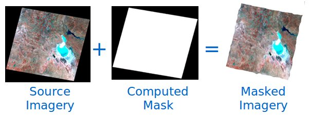
Useful information about gepolymaskgen
gepolymaskgenis a single-threaded low-level GEE Fusion command-line tool that may be manually invoked for building custom mask files for imagery or terrain data sets- Operationally,
gepolymaskgenis CPU intensive and very RAM intensive.- At least 16GB free RAM must be available on the machine to safely build custom masks with
gepolymaskgen
- At least 16GB free RAM must be available on the machine to safely build custom masks with
- All mask files built by
gepolymaskgenwill be written out inGeoTIFFformat - Mask files will be written with complementary geographic coordinates and projection to the source data
- All mask files, KML polygons, vector source files, and source imagery should be in the same projection for building custom masks
- Masks may be built for resources in Plate-Carre projection (EPSG:4326) or Mercator projection (EPSG:3857)
gepolymaskgencan build a mask for one source file or many source files that are described with akhvrvirtual raster text file- Mask files built by
gepolymaskgenwill use 255 to show imagery and 0 to hide imagery- All new masks start as an image file with all pixels of value 0 - all imagery will be masked.
- Areas to hide (to be masked) will be set to pixel value 0
- The
--or_maskmasking operator will, typically, show more imagery for an area in the final mask - The
--and_neg_maskmasking operator will, typically, hide more imagery for an area in the final mask
- The final mask is built by subtracting and adding desired areas to hide or view by a sequence of operators
gepolymaskgen, to the point of pixel-by-pixel matching for the source imagery. Please check the overall raster size of your source imagery before creating a custom mask with gepolymaskgen as it is easy to create a custom mask that will be larger than the 2GB GeoTIFF file size limit. Please see Appendix C for further information on calculating the overall size of a mask file. Useful information about gemaskgen
gemaskgenis a single-threaded low-level Fusion tool which is automatically called during image and terrain resource builds after the source imagery or terrain is imported.- All mask files computed by
gemaskgenwill be written out inGeoTIFFformat gemaskgenscans through an imported imagery or terrain resource to:- identify the pixel value of each corner pixel, and
- erode inward into the image to mask out all pixels that have the same pixel value as the corner pixels
gemaskgenwill, by default, create an output mask file which is no more than 16,000 pixels on any one side.- This can lead to low resolution masks for high resolution data
- Masks may be manually created by invoking
gemaskgendirectly!- Masks larger than 16,000 pixels may be created for large imagery resources with the
--maxsizeoption - Please see Appendix D for additional details
- Masks larger than 16,000 pixels may be created for large imagery resources with the
Comparison of the gemaskgen and gepolymaskgen
| Capability | gemaskgen |
gepolymaskgen |
|---|---|---|
| Reads Fusion format imagery (.kip) and terrain (.ktp) | Yes | No |
| Part of image resource import process | Yes, for automask mode | No |
Can read source file images including: khvrs; |
No, can only read Fusion imagery and terrain resource formats | Yes |
| Can automatically identify and mask Fill Data automatically within imagery resource (holes) | Yes | No, but may be manually removed with KML polygons |
| Can feather a specified amount of pixels from the edge of the image, irrespective of the imagery pixel values | No | Yes |
| Capable of creating high resolution mask files | Yes, manually possible | Yes - depends on raster dimensions of input source file |
| Can automatically distinguish Fill Data from usable imagery by pixel values | Yes | No |
| Can mask out arbitrary polygonal shapes within the image resource | No | Yes |
When to use gepolymaskgen
The gepolymaskgen tool is best suited for when imagery is to be masked along specific, designated borders - such as coastlines, boundaries, or a building - or to mask image at a fixed feathering from the image edge regardless whether usable imagery or fill data are at the edge.
When to use gemaskgen
Fusion's automask (gemaskgen) function is best suited for automatically creating mask files that detect and hide fill data while displaying usable (non-fill) imagery. gemaskgen is also very useful when working with large image resources to create a base mask that will be less than 2GB in file size but still facilitate a high fidelity mask.
Please see Appendix F for further instructions on how gemaskgen may be utilized with creating masks for large image resources.
Recommended tools for creating custom mask files
- A server or workstation with minimum 16GB RAM to build the custom masks. More RAM is better!
- Global coastlines as polygons for coastline masking. Make certain these are polygons and not lines
- A GIS application, such as QGIS, to view source imagery datasets. This is helpful in determining if usable imagery are surrounded by fill data, reprojecting the source imagery, or combining multiple source files into one image.
- A copy of Google Earth EC to connect to and view 3D databases built with the custom masks for QA testing. Google Earth can also be used in the masking process by creating KML polygons for additional areas that are to be masked from view.
- A photo editing application such as Adobe Photoshop, GIMP, or similar, to view the custom mask files after
gepolymaskgenbuilds, or to make modifications to the mask file such as unmasking water bodies or exposing more visible water from a coastline.
gepolymaskgen command usage
gepolymaskgen has a few command line parameters to specify the workflow for creating a mask. The main workflow is directing gepolymaskgen to create or load an image as a reference for masking, generating as mask based on desired regions, feathering the mask edges as needed, and then writing out the resulting mask. Here are the main gepolymaskgen options:
gepolymaskgen
- Specify which file to reference for creating the mask, or which existing mask file to load:
--base_image: specifies a source file that will be used for overall raster dimensions, geographic coordinates, and projection information. May be aGeoTIFF,JPEG2000, orKHVRfile. Eachgepolymaskgeninvocation may only include either one--base_imageor one--base_maskfor masking operations.
--base_mask: specifies a mask file to read in for further mask processing. The specified file may be aGeoTIFF. Eachgepolymaskgeninvocationmay only include either one--base_imageor one--base_maskfor masking operations.
- Modify the mask file by changing what is masked and feathering:
--feather: directsgepolymaskgento create a feather along a masked edge by the specified number of pixels. Either positive or negative values may be specified with--featherto expand or contract the feathered edge around the masked line. Positive feather settings typically erode into the usable imagery from the mask line (contracting) while negative feather settings typically erode away from the usable imagery from the mask line (expanding). Using the--invertsetting with a masking operation will reverse the effect a--featheroperation has on the mask. The--featheroption may be used with the--base_image,--base_mask,--and_neg_mask, and--or_maskmask options; however, only one--featheroption may be specified for each operator. The default feather value for--featheris set to 0 pixels.
--feather_border: used in conjunction only with--feather, and directsgepolymaskgento apply a feather to the extent of the mask file with the same feathering values specified with the--featheroption. The--feather_borderoption is off by default.
--invert: directsgepolymaskgento invert a specified mask from its original values to the opposite. In almost all cases, this involves swapping pixel values from 0 to 255 or 255 to 0, depending on whether the--base_imageor--base_maskare inverted, or a--and_neg_maskor--or_maskare inverted. Inverting a mask affects the--featheroperations as well for expanding or contracting mask feather at the specified mask edges. The--invertoption may be combined with--base_image,--base_mask,--and_neg_mask,--or_mask, or--output_mask.
--and_neg_mask: directsgepolymaskgento remove a specified area from view (i.e. subtracting, or masking). May be combined with the--featherand--feather_borderoptions to build a feathered edge along masked areas. Multiple--and_neg_maskoperations may be combined in onegepolymaskgensequence as necessary for complex mask builds. It is possible to also possible for agepolymaskgensequence to include both--and_neg_maskand--or_maskoperations.--or_mask: directsgepolymaskgento add a specified area into view (i.e. adding, or "unmasking"). May be combined with the--featherand--feather_borderoptions to build a feathered edge along masked areas. Multiple--or_maskoperations may be combined in onegepolymaskgensequence, as necessary, for complex mask builds. It is also possible for agepolymaskgensequence to include both--and_neg_maskand--or_maskoperations.
- Specify the output mask
--output_mask: the folder path location and filenamegepolymaskgenis to write the finished mask file. The completed mask file to import with GEE Fusion Pro must have the same filename as the source file with a-mask.tifextension. For example, if the source file isbrazil-squareimage-nofill.tifthe mask file must be namedbrazil-squareimage-nofill-mask.tif. Only one--output_maskmay be specified pergepolymaskgenoperation.
As an example, this
gepolymaskgeninvocation will create a zero-feather mask file that edge-matches source data:gepolymaskgen --feather 0 --feather_border 0 --base_image brazil-squareimage-nofill.khvr --invert --output_mask brazil-squareimage-nofill-mask.tifLet's step through the sequence of events that occur when
gepolymaskgenis invoked as noted above. A new mask file will be created with the same raster dimensions, projection, and geographic coordinates as thebrazil-squareimage-nofill.khvrmosaic file specified with--base_image.gepolymaskgenwill not feather the edge of the new mask file (--feather 0) for which all pixel values in the mask will be 0.The
--invertoption directsgepolymaskgento change the mask pixel values from 0 to 255 before writing out the finished mask filebrazil-squareimage-nofill-mask.tif. The resulting mask file will look like the image below as viewed in the GIMP photo editing tool. The resulting image resource, when imported into GEE Fusion Pro will display all pixels since the mask file includes edge-to-edge 255 pixels, to display the imagery. Conversely, if all pixels were value 0 (black), the image would be fully hidden from view.An edge-matched, zero-feather mask file built by gepolymaskgen as viewed in the GIMP photo editing tool:
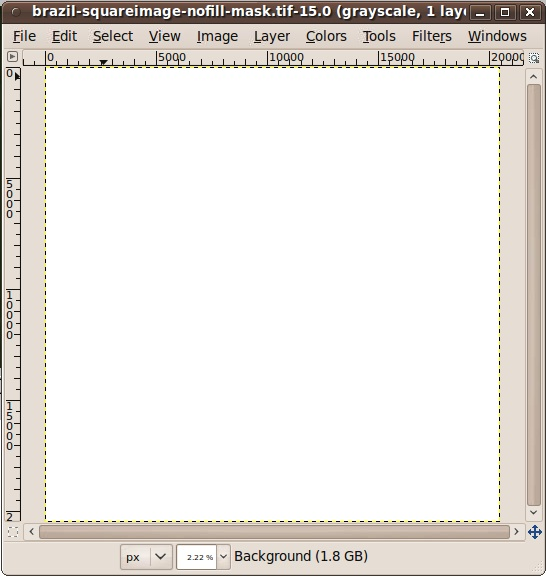
All custom mask files can be built with the different
gepolymaskgenmasking operators in various combinations to add or subtract shapes from a mask so only the desired imagery is visible. Some masking situations may be very complex and require building multiple mask files withgepolymaskgento achieve the desired effect. The next section includes some common use cases for building custom masks as a quick reference guide so you may see the steps involved and copy and adapt the commands to suit your own masking needs. These example cases include creating an edge-matched imagery mask with no feathering; creating a mask that clips imagery to the coastline on one side and creates and edge feather on the other side; masking islands to only show land imagery; masking sections within an image.
Example use cases and commands to build custom masks
Five example cases are available below to reference for building custom masks for imagery resources within Google Earth Enterprise Fusion Pro. Each case, or scenario, is intended to address common masking challenges that may be encountered when working with various source imagery data sets. Each case will include contextual information for the scenario, workflow description, an example build with screenshots, and a set of command templates that may be copied and pasted to the command line of your system for building a custom mask.
The example cases include:
Case 1: Creating masks for imagery that has edge-to-edge usable imagery pixels with a fixed-width feather;
Case 2: Creating custom masks for islands with coastlines;
Case 3: Creating a custom mask with coastlines on one side and a fixed-width feather on other sides;
Case 4: Custom masks that mask out areas within the image utilizing a KML file;
Case 5: Create a custom mask utilizing gemaskgen for automatic fill detection and gepolymaskgen for coastline masking
Case 1: Create custom masks for imagery which has no fill pixels (usable imagery goes to the edges)
Working with source imagery which fully includes usable imagery to the image edges can cause problems for the gemaskgen tool since usable imagery pixels (ex: 132, 56, 200), and not fill pixels (ex: 0,0,0), will occupy the image corners which gemaskgen references for fill pixel values. The gepolymaskgen tool is well suited to meet this masking challenge since a mask can be created the exact raster dimensions of the image resource, the exact feathering value (0) can be specified, and gepolymaskgen will not attempt to read pixel values. Consider the imagery mosaic below in the middle of Brazil which includes several source images which include all usable imagery and no fill.
Location of image mosaic as seen with virtual raster file:
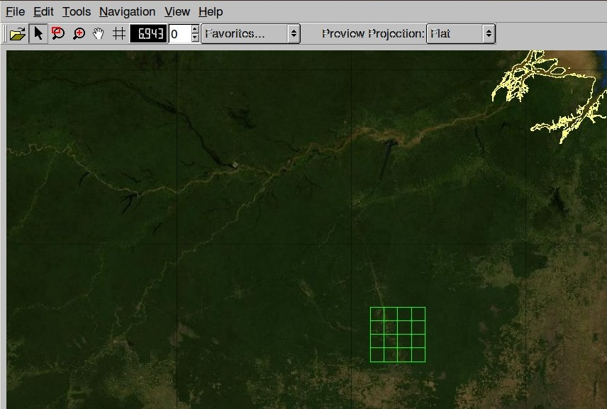
Close up of imagery resource imported into Fusion:
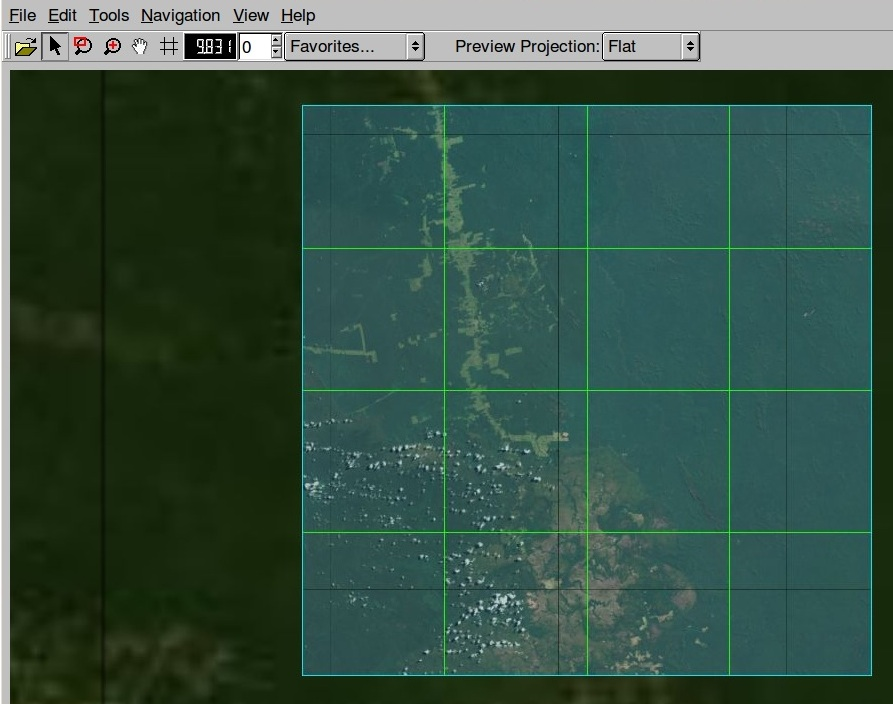
Since we know the source imagery does not contain fill data we can create a custom mask based on the khvr virtual mosaic description file, then include this for import into Fusion. For this process, gepolymaskgen will need to know:
- The base image to create the mask file from (including location and raster dimensions)
- What feather to apply to the image
- If the image border is to be feathered (yes)
- What to name the output image.
Due to how gepolymaskgen works, we will have to invert the output mask so the image edge is masked out instead of masking out the usable imagery. A khvr mosaic description file was created for the collection of JPEG2000 imagery files with the gevirtualraster command, and this will be used as our base image since it represents the overall size of the mosaic. The output mask will be named the same filename as the khvr file but with a -mask.tif extension so it may be read into Fusion Pro. Two masks will be built for this case which are identical except for the applied feathering value. Part 1 will build an edge-matched mask with a zero-edge feather to show all pixels of the source imagery while Part 2 will build an edge-matched mask with a 100-pixel feather.
Example A: Creating an edge-matched mask with no feather
The command template to build a zero-feather, edge-matched mask file with gepolymaskgen is:
gepolymaskgen --feather 0 --feather_border 0 --base_image imagery.tif --invert --output_mask imagery-mask.tif
Here is output from the console building a working mask file for the example imagery:
jcain@machine123:/gevol-local/src/$ time /opt/google/bin/gepolymaskgen --feather 0 --feather_border 0 --base_image brazil-squareimage-nofill.khvr --invert --output_mask brazil-squareimage-nofill-mask.tif
Fusion Notice: Feather 0
Fusion Notice: Feather border 0
Fusion Notice: Base image: brazil-squareimage-nofill.khvr
Fusion Notice: brazil-squareimage-nofill.khvr width: 20480 height: 20480
Fusion Notice: north: -7.646484e+00 south: -9.404297e+00 east: -5.387695e+01 west: -5.563477e+01
Fusion Notice: File type: KHM/Keyhole Mosaic
Fusion Notice: Projection : 'GEOGCS["WGS 84",DATUM["WGS_1984",SPHEROID["WGS 84",6378137,298.257223563,AUTHORITY["EPSG","7030"]],AUTHORITY["EPSG","6326"]],PRIMEM["Greenwich",0],UNIT["degree",0.0174532925199433],AUTHORITY["EPSG","4326"]]'
Fusion Notice: Invert
Fusion Notice: Output mask: brazil-squareimage-nofill-mask.tif
Fusion Notice: Setting feather 0.
Fusion Notice: Feather border is off.
Fusion Notice: Setting base image brazil-squareimage-nofill.khvr.
Fusion Notice: Inverting current mask.
Fusion Notice: Saving mask to brazil-squareimage-nofill-mask.tif.
Fusion Notice: Writing alpha file brazil-squareimage-nofill-mask.tif
real 0m5.350s
user 0m2.670s
sys 0m2.260s
The resulting mask will be approximately 100MB in filesize and will display all usable imagery in the areas of white pixels.
View of the built mask file within the GIMP photo editing tool with edge-to-edge display of all imagery pixels for the source file:
View of the image resource after import into Fusion Pro with the custom mask:
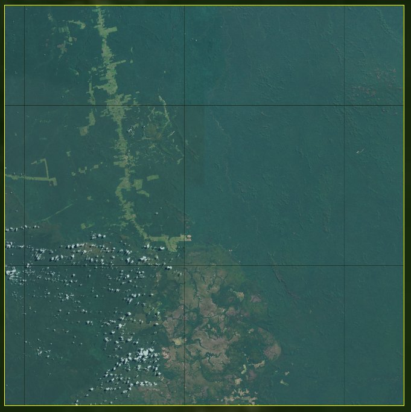
Once the mask file is built by gepolymaskgen, the source imagery may be imported into Fusion Pro by enabling the havemask masking mode in the Fusion GUI or specifying the --havemask option with the genewimageryresource or gemodifyimageryresource commands.
Please see Appendix A for further information about enabling the havemask mask mode for an image resource.
Example B: Creating an edge-matched mask with a fixed value feather
The same technique described in Part 1 may also be used for creating a mask that masks the imagery edge by a specified number of pixels regardless of the imagery along the edges of the image. In this case, suppose we have the same 15-meter resolution imagery for Brazil from Part 1, where each source image includes usable imagery in each pixel and does not include any fill data borders, and we wish to create a mask for the entire mosaic that feathers 100 pixels into the image.
The command template to build a 100-pixel feathered edge mask is:
gepolymaskgen --feather -100 --feather_border 1 --base_image source-image.tif --invert --output_mask source-image-mask.tif
The pixel value may be larger than 100 pixels or smaller than 100 pixels to expand the mask into the imagery or toward the imagery edge as desired for each image and terrain resource.
Here is an example output from gepolymaskgen building the 100-pixel feather edge-matched mask for the Brazil imagery:
jcain@machine123:/gevol-local/src/$ time /opt/google/bin/gepolymaskgen --feather -100 --feather_border 1 --base_image brazil-squareimage-nofill.khvr --invert --output_mask brazil-squareimage-nofill-mask.tif
Fusion Notice: Feather -100
Fusion Notice: Feather border 1
Fusion Notice: Base image: brazil-squareimage-nofill.khvr
Fusion Notice: brazil-squareimage-nofill.khvr width: 20480 height: 20480
Fusion Notice: north: -7.646484e+00 south: -9.404297e+00 east: -5.387695e+01 west: -5.563477e+01
Fusion Notice: File type: KHM/Keyhole Mosaic
Fusion Notice: Projection : 'GEOGCS["WGS 84",DATUM["WGS_1984",SPHEROID["WGS 84",6378137,298.257223563,AUTHORITY["EPSG","7030"]],AUTHORITY["EPSG","6326"]],PRIMEM["Greenwich",0],UNIT["degree",0.0174532925199433],AUTHORITY["EPSG","4326"]]'
Fusion Notice: Invert
Fusion Notice: Output mask: brazil-squareimage-nofill-mask-100feather.tif
Fusion Notice: Setting feather -100.
Fusion Notice: Feather border is on.
Fusion Notice: Setting base image brazil-squareimage-nofill.khvr.
Total tiles to process: 1
Completed 100% (1/1) - tiles/sec: 0.10 - time left: 00:00:00 [CPU: 99 Mem: 975 MB PF: 0]
Processed 1 tiles
Total time to process: 00:00:10
Average tiles per second: 0.10
Fusion Notice: Inverting current mask.
Fusion Notice: Saving mask to brazil-squareimage-nofill-mask.tif.
Fusion Notice: Writing alpha file brazil-squareimage-nofill-mask.tif
real 0m16.985s
user 0m14.450s
sys 0m2.200s
The resulting mask file will be approximately 100MB in filesize with a feathered edge 100 pixels from the edge inwards into the image resource.
Resulting mask file from gepolymaskgen seen in the GIMP photo editing tool:
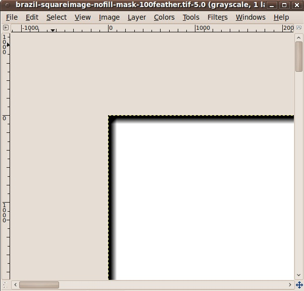
The image resource now has a 100-pixel feather after Fusion import:
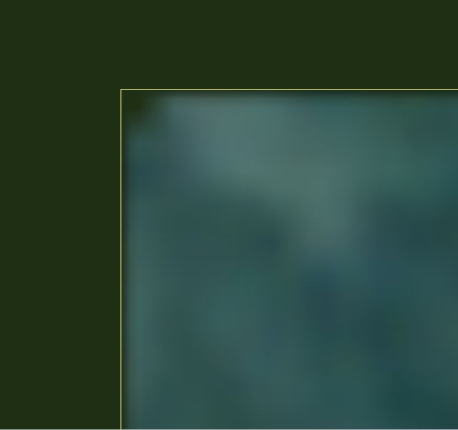
Once the mask file is built by gepolymaskgen, the source imagery may be imported into Fusion Pro by enabling the havemask masking mode in the Fusion GUI or specifying the --havemask option with the genewimageryresource or gemodifyimageryresource commands.
Please see Appendix A for further information about enabling the havemask mask mode for an image resource.
Case 2: Create custom masks for islands
Masking imagery around islands is another good use case for gepolymaskgen since it is often desirable to only show usable imagery for the island above sea level and to mask imagery at the coastlines. In this example, we have imagery for the island of Oahu for Hawaii, USA, where all imagery for the island is to be seen in the imagery project but all imagery from the coastline away from the island to the edge of the imagery is to be masked from view.
Fusion Preview window:
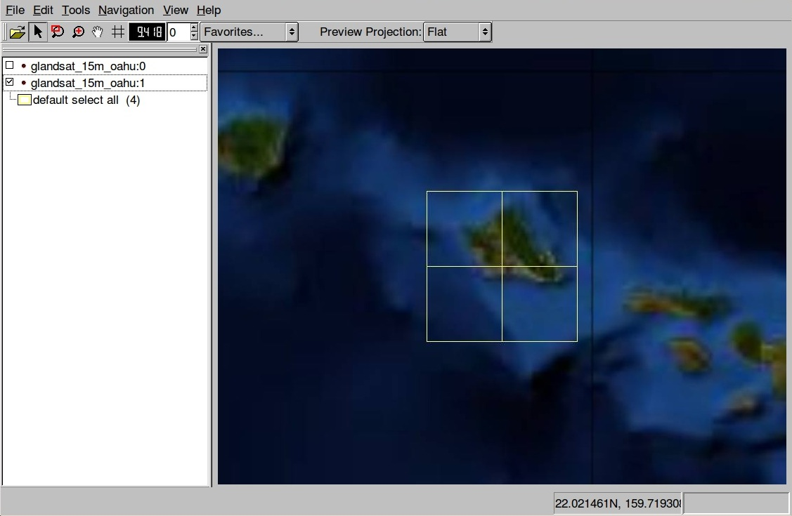
The Fusion Preview window above displays the overall dimensions and source file extents for four images creating an imagery mosaic for the island of Oahu, Hawaii, USA. A virtual raster description file (KHVR) was created for the four source files and loaded into the Fusion Preview window.
Importing the source imagery into Fusion Pro creates an image resource with imagery for the island and water (automask used):
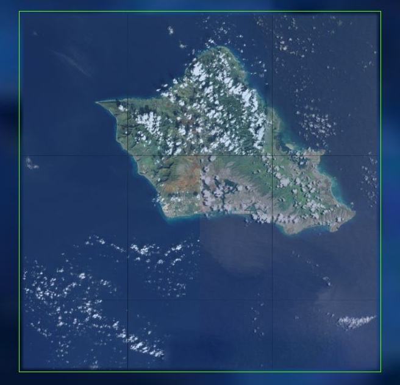
Four JPEG2000 images were grouped into one virtual mosaic for the image resource and a khvr mosaic description file was built with gevirtualraster. To create the custom mask we need to:
- Direct
gepolymaskgento use the sourcekhvrfile as the base image to set the custom mask the same raster size and fully masks all imagery from view; - Clip out the island of Oahu with a set of vector polygons so the island imagery will be visible;
- Feather along the specified polygon coastlines to facilitate smooth blending with other image resources (feather = 100);
- Write out the custom mask file.
Two examples will be included for this case demonstrating the effect of positive and negative feather values for feathering along the shoreline. Generally speaking, a positive feather value will erode from the mask line inward to show less visible imagery while a negative feather value will draw away from the mask line to show more visible imagery.
Example A: Create a custom edge-matched mask for an island that masks into the land
The command template for creating a custom mask for an island with a positive value feather is:
gepolymaskgen --base_image imagery.tif --feather 100 --or_mask world_coastlines_4326.shp --output_mask imagery-mask.tif
The larger or smaller pixel value may be specified to expand the mask further from the coastline into the visible imagery (larger number), or to stay closer to the coastline.
Example console output is included below:
jcain@machine123:/gevol-local/src/gepolymaskgen-howto$ time gepolymaskgen --base_image glandsat_15m_oahu.khvr --feather 100 --or_mask world_coastlines_4326.shp --output_mask glandsat_15m_oahu-100mask.tif
Fusion Notice: Base image: glandsat_15m_oahu.khvr
Fusion Notice: glandsat_15m_oahu.khvr width: 10240 height: 10240
Fusion Notice: north: 2.179688e+01 south: 2.091797e+01 east: -1.575879e+02 west: -1.584668e+02
Fusion Notice: File type: KHM/Keyhole Mosaic
Fusion Notice: Projection : 'GEOGCS["WGS 84",DATUM["WGS_1984",SPHEROID["WGS 84",6378137,298.257223563,AUTHORITY["EPSG","7030"]],AUTHORITY["EPSG","6326"]],PRIMEM["Greenwich",0],UNIT["degree",0.0174532925199433],AUTHORITY["EPSG","4326"]]'
Fusion Notice: Feather 100
Fusion Notice: OR mask: world_coastlines_4326.shp
Fusion Notice: Output mask: glandsat_15m_oahu-100mask.tif
Fusion Notice: Setting base image glandsat_15m_oahu.khvr.
Fusion Notice: Setting feather 100.
Fusion Notice: Writing alpha file glandsat_15m_oahu-100mask.tif
Fusion Notice: Executing: gdal_rasterize -b 1 -burn 255 -l world_coastlines_4326 world_coastlines_4326.shp glandsat_15m_oahu-100mask.tif
0...10...20...30...40...50...60...70...80...90...100 - done.
Total tiles to process: 1
Completed 100% (1/1) - tiles/sec: 0.38 - time left: 00:00:00 [CPU: 15 Mem: 554 MB PF: 0]
Processed 1 tiles
Total time to process: 00:00:03
Average tiles per second: 0.38
Fusion Notice: OR-ing mask with new mask.
Fusion Notice: Saving mask to glandsat_15m_oahu-100mask.tif.
Fusion Notice: Writing alpha file glandsat_15m_oahu-100mask.tif
real 0m31.757s
user 0m28.390s
sys 0m3.020s
The resulting mask file is approximately 400MB in filesize. Screenshots of the output mask and resulting Fusion image resource may be seen below.
View of the mask with a 100 pixel feather as seen in the GIMP photo editor:
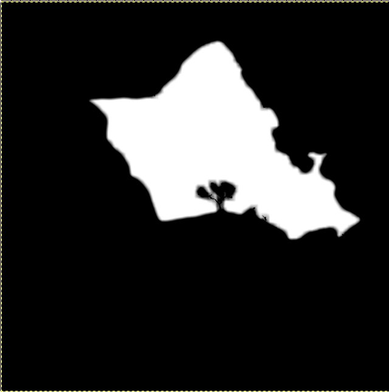
View of the Oahu, Hawaii, USA imagery in Fusion Preview after importing the custom mask with the image resource:
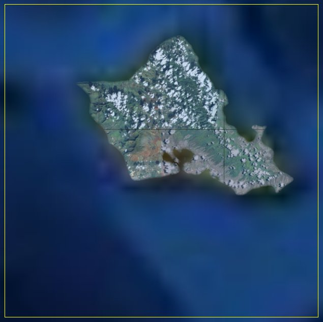
The custom mask file may now be imported into Fusion Pro with the source imagery by enabling the havemask masking mode in the Fusion Pro Resource Editor or by specifying the gemodifyimageryresource --havemask option on the command line.
Please see Appendix A for further information about enabling the havemask mask mode for an image resource.
Example B: Create a custom edge-matched mask for an island that masks into the water
This example uses the same source imagery as Example A but a negative pixel value is provided for the feather value to expand the mask feather away from the shoreline outward into the water.
The command template for this example is:
gepolymaskgen --base_image imagery.khvr --feather -100 --or_mask world_coastlines_4326.shp --output_mask imagery-mask.tif
Larger or smaller negative feather values may be specified with the gepolymaskgen command to expand farther away from the coastline mask or closer to the coastline mask as desired.
Example output for creating the mask and screenshots are included below:
jcain@machine123:/gevol-local/src/gepolymaskgen-howto$ time gepolymaskgen --base_image glandsat_15m_oahu.khvr --feather -100 --or_mask world_coastlines_4326.shp --output_mask glandsat_15m_oahu-minus100mask.tif
Fusion Notice: Base image: glandsat_15m_oahu.khvr
Fusion Notice: glandsat_15m_oahu.khvr width: 10240 height: 10240
Fusion Notice: north: 2.179688e+01 south: 2.091797e+01 east: -1.575879e+02 west: -1.584668e+02
Fusion Notice: File type: KHM/Keyhole Mosaic
Fusion Notice: Projection : 'GEOGCS["WGS 84",DATUM["WGS_1984",SPHEROID["WGS 84",6378137,298.257223563,AUTHORITY["EPSG","7030"]],AUTHORITY["EPSG","6326"]],PRIMEM["Greenwich",0],UNIT["degree",0.0174532925199433],AUTHORITY["EPSG","4326"]]'
Fusion Notice: Feather -100
Fusion Notice: OR mask: world_coastlines_4326.shp
Fusion Notice: Output mask: glandsat_15m_oahu-minus100mask.tif
Fusion Notice: Setting base image glandsat_15m_oahu.khvr.
Fusion Notice: Setting feather -100.
Fusion Notice: Writing alpha file glandsat_15m_oahu-minus100mask.tif
Fusion Notice: Executing: gdal_rasterize -b 1 -burn 255 -l world_coastlines_4326 world_coastlines_4326.shp glandsat_15m_oahu-minus100mask.tif
0...10...20...30...40...50...60...70...80...90...100 - done.
Total tiles to process: 1
Completed 100% (1/1) - tiles/sec: 0.38 - time left: 00:00:00 [CPU: 16 Mem: 554 MB PF: 0]
Processed 1 tiles
Total time to process: 00:00:03
Average tiles per second: 0.38
Fusion Notice: OR-ing mask with new mask.
Fusion Notice: Saving mask to glandsat_15m_oahu-minus100mask.tif.
Fusion Notice: Writing alpha file glandsat_15m_oahu-minus100mask.tif
real 0m31.621s
user 0m28.510s
sys 0m3.100s
The resulting mask file is approximately 400MB in filesize. Screenshots of the output mask and resulting Fusion image resource may be seen below.
View of the mask file with a -100 pixel feather as seen in the GIMP photo editor:
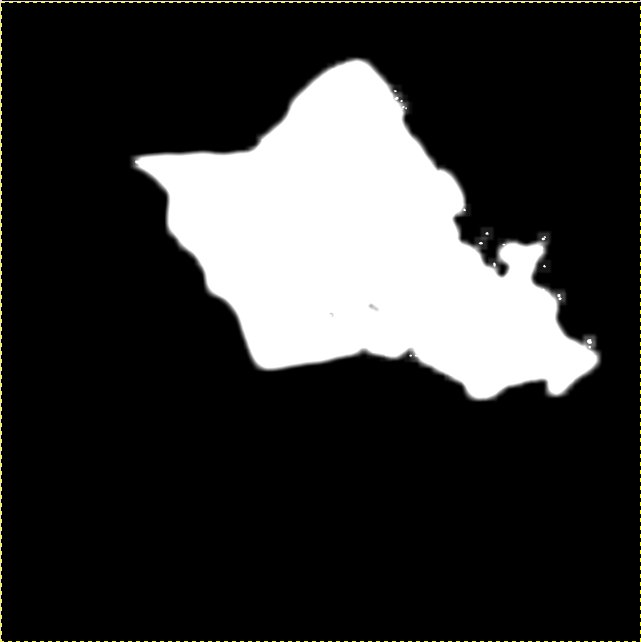
View of the Oahu, Hawaii, USA imagery in Fusion Preview after importing the custom mask with the image resource:
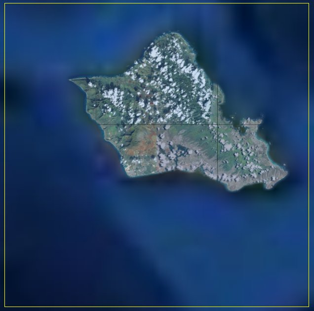
The custom mask file may now be imported into Fusion Pro with the source imagery by enabling the havemask masking mode in the Fusion Pro Resource Editor or by specifying the gemodifyimageryresource --havemask option on the command line.
Please see Appendix A for further information about enabling the havemask mask mode for an image resource.
Case 3: Create custom masks with coastlines and shared edges with other imagery resources
Creating custom masks for imagery resources bordering coastlines is a little more challenging since a set of vector polygons are needed to mask the desired imagery to the coastline, and it is necessary to determine what feather values to apply to the coastline and the external edges of the mask. Let's first see the imagery we will be working with in this example.
View from the Fusion Preview GUI with imagery for California, USA along the coastline:
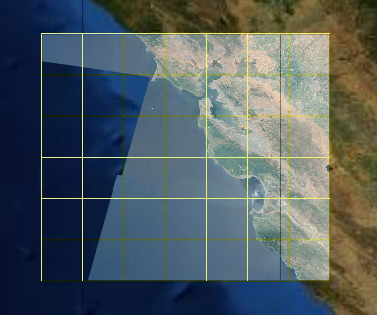
Forty-two source files of 15-meter imagery have been grouped into one virtual raster to build a new imagery resource. The source images along the interior of California fully contain usable imagery and do not include fill data; however, imagery along the Pacific Ocean includes water. The goal will be to mask the water from view while displaying imagery for the land. The workflow will be as follows:
- Create the overall mask for the image
- Apply a set of coastal polygons to demarcate the coastline
- Feather the coastline and apply the feather to the mask border as well
- Write out the mask file
In this case, we will create three different types of masks with coastline data - one where the coastlines and edges have the same feathering, one where the coastlines and edges have different feathering values, and one where the coastline is feathered but the edges are not feathered.
Example A: Create an edge-matched custom mask that feathers coastlines and external edges with the same feather value
This example will build a mask file that masks visible imagery to a specified coastline polygon - described by a source vector file in ESRI Shapefile format - and hides all ocean imagery from view. The source data are comprised of 42 images in a rectangle with the northernmost and easternmost edges being a border for another image resource. A consistent feather value (300 pixels) will be applied to both the coastlines and the external edges of the imagery with gepolymaskgen.
The command template to build this type of mask is:
gepolymaskgen --base_image imagery.khvr --invert --feather -300 --feather_border 1 --and_neg_mask world_coastlines_4326.shp --invert --output_mask imagery-mask.tif
Here is an example output to build this type of mask for the 15-meter resolution California imagery:
jcain@machine123:/gevol-local/src/gepolymaskgen-howto$ time /opt/google/bin/gepolymaskgen --base_image glandsat_15m_california_bay_area.khvr --invert --feather -300 --feather_border 1 --and_neg_mask world_coastlines_4326.shp --invert --output_mask glandsat_15m_california_bay_area-coastline-exampleA.tif
Fusion Notice: Base image: glandsat_15m_california_bay_area.khvr
Fusion Notice: glandsat_15m_california_bay_area.khvr width: 35840 height: 30720
Fusion Notice: north: 3.849609e+01 south: 3.585938e+01 east: -1.211133e+02 west: -1.241895e+02
Fusion Notice: File type: KHM/Keyhole Mosaic
Fusion Notice: Projection : 'GEOGCS["WGS 84",DATUM["WGS_1984",SPHEROID["WGS 84",6378137,298.257223563,AUTHORITY["EPSG","7030"]],AUTHORITY["EPSG","6326"]],PRIMEM["Greenwich",0],UNIT["degree",0.0174532925199433],AUTHORITY["EPSG","4326"]]'
Fusion Notice: Invert
Fusion Notice: Feather -300
Fusion Notice: Feather border 1
Fusion Notice: AND mask: world_coastlines_4326.shp
Fusion Notice: Invert
Fusion Notice: Output mask: glandsat_15m_california_bay_area-coastline-exampleA.tif
Fusion Notice: Setting base image glandsat_15m_california_bay_area.khvr.
Fusion Notice: Inverting current mask.
Fusion Notice: Setting feather -300.
Fusion Notice: Feather border is on.
Fusion Notice: Writing alpha file glandsat_15m_california_bay_area-coastline-exampleA.tif
Fusion Notice: Executing: gdal_rasterize -b 1 -burn 255 -l world_coastlines_4326 world_coastlines_4326.shp glandsat_15m_california_bay_area-coastline-exampleA.tif
0...10...20...30...40...50...60...70...80...90...100 - done.
Total tiles to process: 1
Completed 100% (1/1) - tiles/sec: 0.04 - time left: 00:00:00 [CPU: 19 Mem: 3844 MB PF: 0]
Processed 1 tiles
Total time to process: 00:00:28
Average tiles per second: 0.04
Fusion Notice: AND-ing mask with new mask.
Fusion Notice: Inverting current mask.
Fusion Notice: Saving mask to glandsat_15m_california_bay_area-coastline-exampleA.tif.
Fusion Notice: Writing alpha file glandsat_15m_california_bay_area-coastline-exampleA.tif
real 3m55.820s
user 3m39.810s
sys 0m15.650s
The resulting mask file is approximately 1GB in filesize. Screenshot of the mask from the GIMP photo editing tool and the resulting image resource after the mask is applied are available below.
View of the mask file built in Example A as seen in the GIMP photo editing tool:
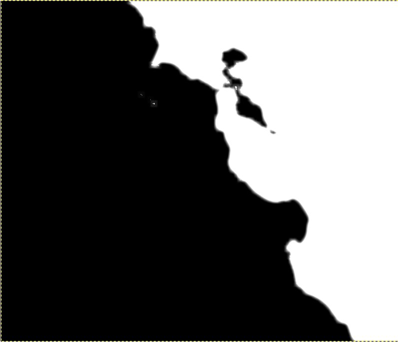
View of the imagery resource within the Fusion Preview window after the custom mask is imported:
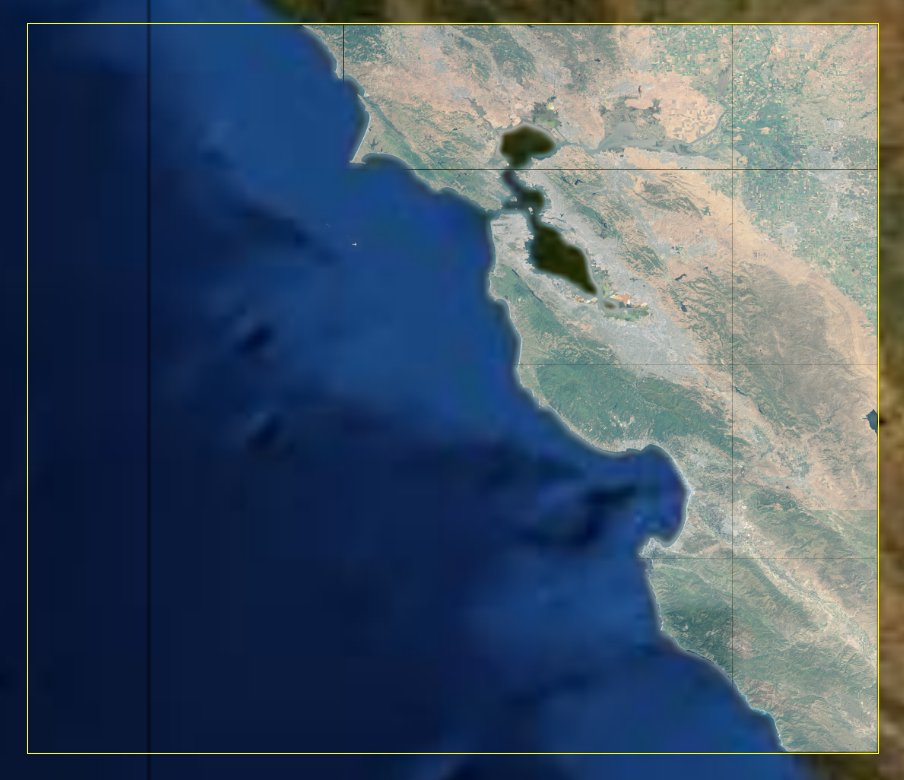
The custom mask file may now be imported into Fusion Pro with the source imagery by enabling the havemask masking mode in the Fusion Pro Resource Editor or by specifying the gemodifyimageryresource --havemask option on the command line.
Please see Appendix A for further information about enabling the havemask mask mode for an image resource.
Example B: Create an edge-matched custom mask with feathered coastlines and feathered external edges
This example will build a mask file that masks visible imagery to a specified coastline polygon - described by a source vector file in ESRI Shapefile format - and hides all ocean imagery from view. The source data are comprised of 42 images in a rectangle with the northernmost and easternmost edges being a border for another image resource. A feather value of -300 pixels will be applied to the coastlines while a -100 pixel feather will be applied to the external imagery edges with gepolymaskgen. This use case is more complex in that three separate steps are needed to create twp separate masks - one which includes the feather border for the overall image, one for the coastlines - and then one operation to merge the mask files together.
The command templates are as follows:
- Create a 'picture frame' mask for the overall image:
gepolymaskgen --feather -100 --feather_border 1 --base_image source_image.tif --output_mask borderfeather-mask.tif - Create a coastline mask:
gepolymaskgen --base_image source_image.tif --feather -300 --or_mask world_coastlines_4326.shp --output coastline-mask.tif - Merge the two masks together into the final mask:
gepolymaskgen --base_mask coastline-mask.tif --and_neg_mask borderfeather-mask.tif --output_mask source_image-mask.tif
Screen shots of each mask file generated by the three steps are included below as a reference.
Picture frame border mask:
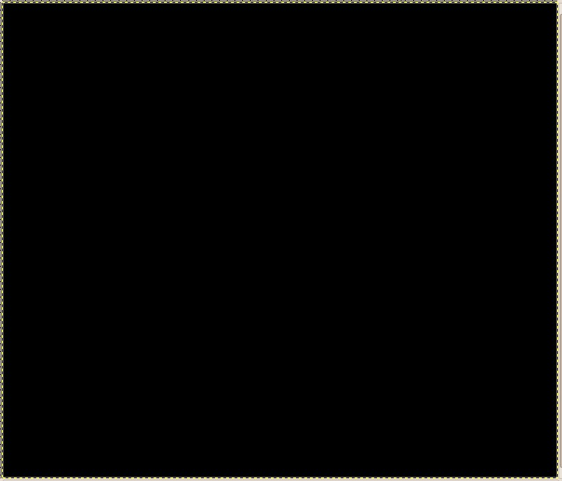
Coastline mask:
Finished, merged mask of coastline and border feather:
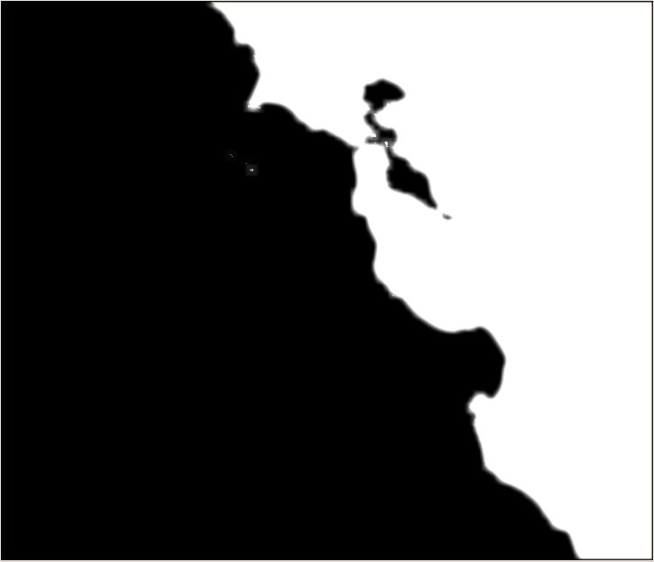
Console output for building these masks are included below for reference along with the time to build and output filesizes for each of the three masks.
- Create a 'picture frame' mask for the overall image:
jcain@machine123:/gevol-local/src/gepolymaskgen-howto$ time gepolymaskgen --feather -100 --feather_border 1 --base_image glandsat_15m_california_bay_area.khvr --output_mask california_borderfeather-mask.tifFusion Notice: Feather -100Fusion Notice: Feather border 1Fusion Notice: Base image: glandsat_15m_california_bay_area.khvrFusion Notice: glandsat_15m_california_bay_area.khvr width: 35840 height: 30720Fusion Notice: north: 3.849609e+01 south: 3.585938e+01 east: -1.211133e+02 west: -1.241895e+02Fusion Notice: File type: KHM/Keyhole MosaicFusion Notice: Projection : 'GEOGCS["WGS 84",DATUM["WGS_1984",SPHEROID["WGS 84",6378137,298.257223563,AUTHORITY["EPSG","7030"]],AUTHORITY["EPSG","6326"]],PRIMEM["Greenwich",0],UNIT["degree",0.0174532925199433],AUTHORITY["EPSG","4326"]]'Fusion Notice: Output mask: california_borderfeather-mask.tifFusion Notice: Setting feather -100.Fusion Notice: Feather border is on.Fusion Notice: Setting base image glandsat_15m_california_bay_area.khvr.Total tiles to process: 1Completed 100% (1/1) - tiles/sec: 0.04 - time left: 00:00:00 [CPU: 98 Mem: 2294 MB PF: 0]Processed 1 tilesTotal time to process: 00:00:27Average tiles per second: 0.04Fusion Notice: Saving mask to california_borderfeather-mask.tif.Fusion Notice: Writing alpha file california_borderfeather-mask.tifreal 0m40.672suser 0m36.000ssys 0m4.300sThe resulting mask file is approximately 1GB in filesize.
- Create a coastline mask:
jcain@machine123:/gevol-local/src/gepolymaskgen-howto$ time gepolymaskgen --base_image glandsat_15m_california_bay_area.khvr --feather -300 --or_mask world_coastlines_4326.shp --output california_coastline-mask.tifFusion Notice: Base image: glandsat_15m_california_bay_area.khvrFusion Notice: glandsat_15m_california_bay_area.khvr width: 35840 height: 30720Fusion Notice: north: 3.849609e+01 south: 3.585938e+01 east: -1.211133e+02 west: -1.241895e+02Fusion Notice: File type: KHM/Keyhole MosaicFusion Notice: Projection : 'GEOGCS["WGS 84",DATUM["WGS_1984",SPHEROID["WGS 84",6378137,298.257223563,AUTHORITY["EPSG","7030"]],AUTHORITY["EPSG","6326"]],PRIMEM["Greenwich",0],UNIT["degree",0.0174532925199433],AUTHORITY["EPSG","4326"]]'Fusion Notice: Feather -300Fusion Notice: OR mask: world_coastlines_4326.shpFusion Notice: Output mask: california_coastline-mask.tifFusion Notice: Setting base image glandsat_15m_california_bay_area.khvr.Fusion Notice: Setting feather -300.Fusion Notice: Writing alpha file california_coastline-mask.tifFusion Notice: Executing: gdal_rasterize -b 1 -burn 255 -l world_coastlines_4326 world_coastlines_4326.shp california_coastline-mask.tif0...10...20...30...40...50...60...70...80...90...100 - done.Total tiles to process: 1Completed 100% (1/1) - tiles/sec: 0.04 - time left: 00:00:00 [CPU: 19 Mem: 3844 MB PF: 0]Processed 1 tilesTotal time to process: 00:00:28Average tiles per second: 0.04Fusion Notice: OR-ing mask with new mask.Fusion Notice: Saving mask to california_coastline-mask.tif.Fusion Notice: Writing alpha file california_coastline-mask.tifreal 3m56.730suser 3m41.010ssys 0m15.340sThe resulting mask file is approximately 1GB in filesize.
- Merge the two masks together into the final mask:
jcain@machine123:/gevol-local/src/gepolymaskgen-howto$ time gepolymaskgen --base_mask california_coastline-mask.tif --and_neg_mask california_borderfeather-mask.tif --output_mask glandsat_15m_california_bay_area-mask.tifFusion Notice: Base mask: california_coastline-mask.tifFusion Notice: california_coastline-mask.tif width: 35840 height: 30720Fusion Notice: north: 3.849609e+01 south: 3.585938e+01 east: -1.211133e+02 west: -1.241895e+02Fusion Notice: File type: GTiff/GeoTIFFFusion Notice: Projection : 'GEOGCS["WGS 84",DATUM["WGS_1984",SPHEROID["WGS 84",6378137,298.257223563,AUTHORITY["EPSG","7030"]],AUTHORITY["EPSG","6326"]],PRIMEM["Greenwich",0],UNIT["degree",0.0174532925199433],AUTHORITY["EPSG","4326"]]'Fusion Notice: AND mask: california_borderfeather-mask.tifFusion Notice: Output mask: glandsat_15m_california_bay_area-mask.tifFusion Notice: Setting base mask california_coastline-mask.tif.Fusion Notice: Writing alpha file glandsat_15m_california_bay_area-mask.tifFusion Notice: AND-ing mask with new mask.Fusion Notice: Saving mask to glandsat_15m_california_bay_area-mask.tif.Fusion Notice: Writing alpha file glandsat_15m_california_bay_area-mask.tifreal 0m23.029suser 0m15.690ssys 0m7.300sThe resulting mask file is approximately 1GB in filesize.
View of finished mask file feathering the coastlines and external edges of the image resource:
View of finished image resource after importing custom mask:

The custom mask file may now be imported into Fusion Pro with the source imagery by enabling the
havemaskmasking mode in the Fusion Pro Resource Editor or by specifying thegemodifyimageryresource --havemaskoption on the command line.Please see Appendix A for further information about enabling the
havemaskmask mode for an image resource.
Example C: Feathered internal coastline and no-feather external edge
This example will build a mask file that masks visible imagery to a specified coastline polygon - described by a source vector file in ESRI Shapefile format - and hides all ocean imagery from view. The source data are comprised of 42 images in a rectangle with the northernmost and easternmost edges being a border for another image resource. A feather value (300 pixels) will be applied to the coastlines while the external imagery edges will have a zero-feather edge.
The command template for this mask is:
gepolymaskgen --base_image source_imagery.tif --invert --feather -300 --feather_border 0 --and_neg_mask world_coastlines_4326.shp --invert --output_mask source_imagery-mask.tif
Console output for building this mask is included below for reference:
jcain@machine123:/gevol-local/src/gepolymaskgen-howto$ time gepolymaskgen --base_image glandsat_15m_california_bay_area.khvr --invert --feather -300 --feather_border 0 --and_neg_mask world_coastlines_4326.shp --invert --output_mask glandsat_15m_california_bay_area-mask.tif
Fusion Notice: Base image: glandsat_15m_california_bay_area.khvr
Fusion Notice: glandsat_15m_california_bay_area.khvr width: 35840 height: 30720
Fusion Notice: north: 3.849609e+01 south: 3.585938e+01 east: -1.211133e+02 west: -1.241895e+02
Fusion Notice: File type: KHM/Keyhole Mosaic
Fusion Notice: Projection : 'GEOGCS["WGS 84",DATUM["WGS_1984",SPHEROID["WGS 84",6378137,298.257223563,AUTHORITY["EPSG","7030"]],AUTHORITY["EPSG","6326"]],PRIMEM["Greenwich",0],UNIT["degree",0.0174532925199433],AUTHORITY["EPSG","4326"]]'
Fusion Notice: Invert
Fusion Notice: Feather -300
Fusion Notice: Feather border 0
Fusion Notice: AND mask: world_coastlines_4326.shp
Fusion Notice: Invert
Fusion Notice: Output mask: glandsat_15m_california_bay_area-mask.tif
Fusion Notice: Setting base image glandsat_15m_california_bay_area.khvr.
Fusion Notice: Inverting current mask.
Fusion Notice: Setting feather -300.
Fusion Notice: Feather border is off.
Fusion Notice: Writing alpha file glandsat_15m_california_bay_area-mask.tif
Fusion Notice: Executing: gdal_rasterize -b 1 -burn 255 -l world_coastlines_4326 world_coastlines_4326.shp glandsat_15m_california_bay_area-mask.tif
0...10...20...30...40...50...60...70...80...90...100 - done.
Total tiles to process: 1
Completed 100% (1/1) - tiles/sec: 0.04 - time left: 00:00:00 [CPU: 19 Mem: 3844 MB PF: 0]
Processed 1 tiles
Total time to process: 00:00:28
Average tiles per second: 0.04
Fusion Notice: AND-ing mask with new mask.
Fusion Notice: Inverting current mask.
Fusion Notice: Saving mask to glandsat_15m_california_bay_area-mask.tif.
Fusion Notice: Writing alpha file glandsat_15m_california_bay_area-mask.tif
real 3m55.201s
user 3m40.410s
sys 0m14.540s
The resulting mask will be approximately 1GB in filesize.
View of the finished mask within the GIMP photo editing tool:
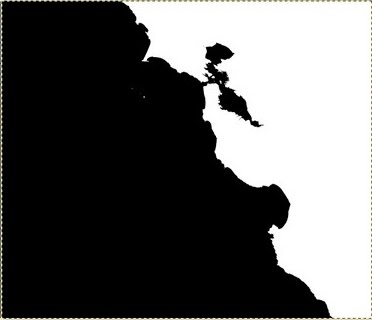
View of the imagery resource within the Fusion Preview window after importing the custom mask:
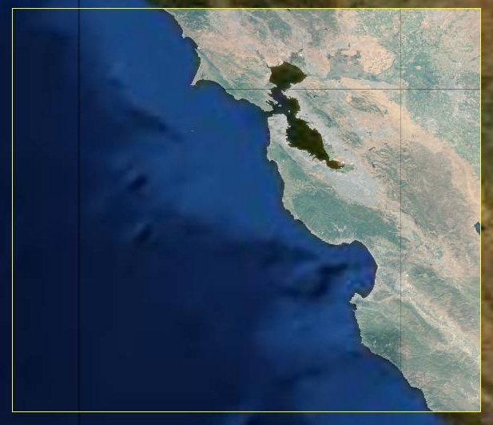
The custom mask file may now be imported into Fusion Pro with the source imagery by enabling the havemask masking mode in the Fusion Pro Resource Editor or by specifying the gemodifyimageryresource --havemask option on the command line.
Please see Appendix A for further information about enabling the havemask mask mode for an image resource.
Case 4: Masking out sections within an image resource
gepolymaskgen is capable of masking out sections within a source image in addition to masking external edges of the imagery. This is similar to the hole checking option with the gemaskgen tool which can automatically scan an image resource to seek fill data within the image resource. The main difference is gepolymaskgen will only mask out user-specified sections of the imagery. This example case will build on the principles discussed in Case 1 where a fixed feather value edge mask will be made for a mosaic with imagery to the edges, and additionally demonstrate removing (masking) internal portions of an image resource from view with a KML file created in Google Earth. Let's first see a screenshot of imagery used for this example.
View of image resource in Fusion Preview after import with the automask tool:
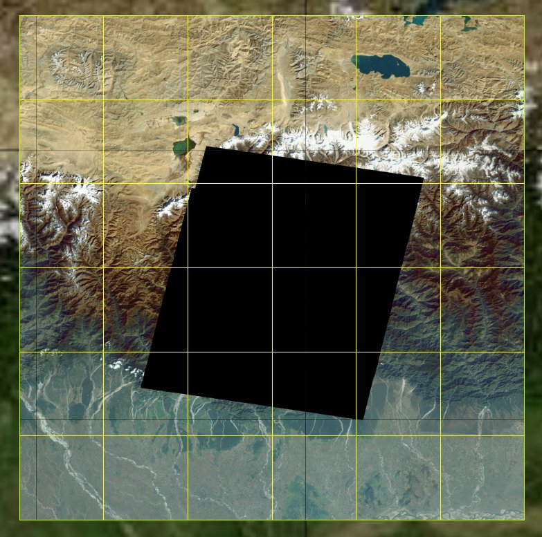
Boundaries for the imported source files (khvr) are overlayed on the image for reference.
The workflow for this example is different from the others since we need a KML file to specify which area in the image to remove from view. The general workflow will be:
- Import the imagery into GEE Fusion Pro and build into an imagery project
- Build and publish the imagery into a flyable 3D database
- View the 3D database with Google Earth EC to QA the data
- Draw an enclosed polygon in Google Earth EC that would mask the missing area of imagery from view
- Build the custom mask with
gepolymaskgento correctly feather the imagery edges and mask the missing imagery - Import the custom mask with the image resource
Examples of what the imagery resource looks like as viewed in Google Earth EC are included below.
This image demonstrates how the image resource appears with the area of missing imagery:
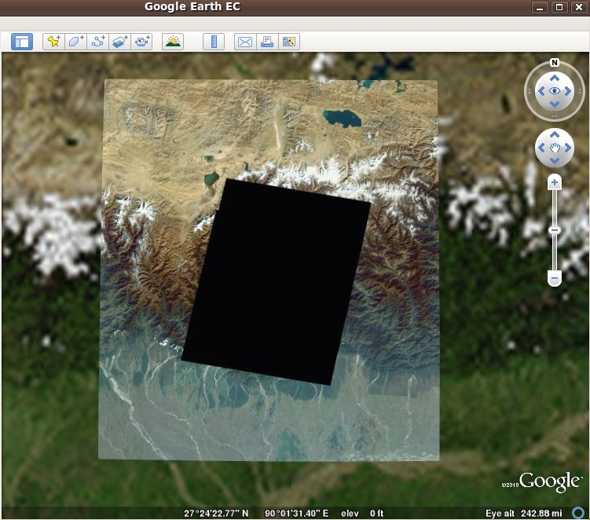
This image is a screenshot after a polygon was drawn over the entire area of missing imagery:
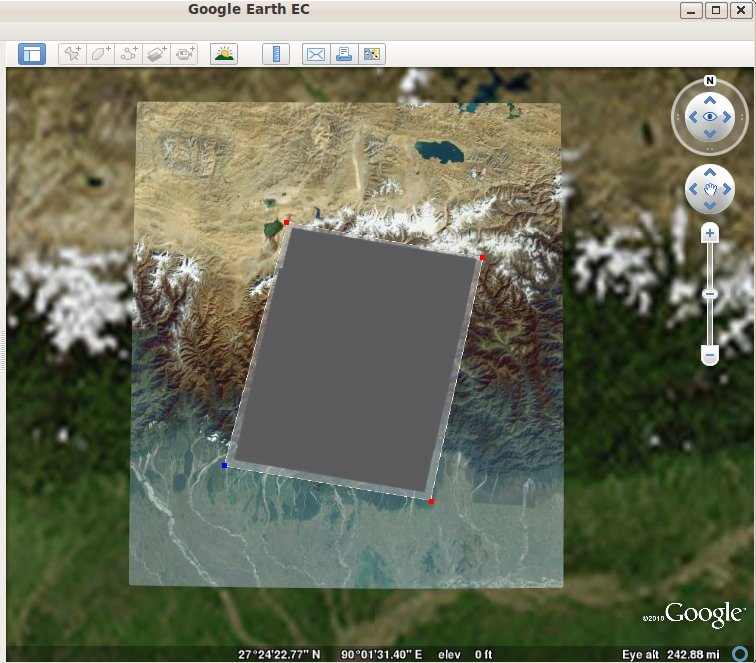
The polygon area was set to 50% opacity in order to show the polygon fully covers the area of missing imagery with a little overlap into the usable imagery. This polygon will be stored in the Places panel of Google Earth EC and must be saved out from Google Earth as an independent KML file that can then be utilized with gepolymaskgen.
KML file directly (four polygons saved to four separate KML files) as these will be separate mask operations within gepolymaskgen. Example A: Creating an edge-matched mask with a feathered edge and masking missing internal imagery in one step
This example will create the custom mask in one command sequence by first creating a feathered edge mask based on the source image (--base_image) and then applying a KML file to mask out the area of missing imagery.
The command template to create the mask, in one step, is:
gepolymaskgen --feather -100 --feather_border 1 --base_image source_imagery.khvr --invert --feather 50 --and_neg_mask missing-imagery-area.kml --output_mask source_imagery-mask.tif
Console output for creating the mask file in one step is as follows:
jcain@machine123:/gevol-local/src/gepolymaskgen-howto$ time gepolymaskgen --feather -100 --feather_border 1 --base_image glandsat_15m_bhutan_missing_imagery.khvr --invert --feather 50 --and_neg_mask bhutan.kml --output_mask glandsat_15m_bhutan_missing_imagery-mask.tif
Fusion Notice: Feather -100
Fusion Notice: Feather border 1
Fusion Notice: Base image: glandsat_15m_bhutan_missing_imagery.khvr
Fusion Notice: glandsat_15m_bhutan_missing_imagery.khvr width: 30720 height: 30720
Fusion Notice: north: 2.882812e+01 south: 2.619141e+01 east: 9.114258e+01 west: 8.850586e+01
Fusion Notice: File type: KHM/Keyhole Mosaic
Fusion Notice: Projection : 'GEOGCS["WGS 84",DATUM["WGS_1984",SPHEROID["WGS 84",6378137,298.257223563,AUTHORITY["EPSG","7030"]],AUTHORITY["EPSG","6326"]],PRIMEM["Greenwich",0],UNIT["degree",0.0174532925199433],AUTHORITY["EPSG","4326"]]'
Fusion Notice: Invert
Fusion Notice: Feather 50
Fusion Notice: AND mask: bhutan.kml
Fusion Notice: Output mask: glandsat_15m_bhutan_missing_imagery-mask.tif
Fusion Notice: Setting feather -100.
Fusion Notice: Feather border is on.
Fusion Notice: Setting base image glandsat_15m_bhutan_missing_imagery.khvr.
Total tiles to process: 1
Completed 100% (1/1) - tiles/sec: 0.04 - time left: 00:00:00 [CPU: 99 Mem: 1990 MB PF: 0]
Processed 1 tiles
Total time to process: 00:00:23
Average tiles per second: 0.04
Fusion Notice: Inverting current mask.
Fusion Notice: Setting feather 50.
Fusion Notice: Writing alpha file glandsat_15m_bhutan_missing_imagery-mask.tif
Fusion Notice: Executing: ogr2ogr -t_srs 'GEOGCS["WGS 84",DATUM["WGS_1984",SPHEROID["WGS 84",6378137,298.257223563,AUTHORITY["EPSG","7030"]],AUTHORITY["EPSG","6326"]],PRIMEM["Greenwich",0],UNIT["degree",0.0174532925199433],AUTHORITY["EPSG","4326"]]' /tmp/p14999QFR8Mx/tmp.shp bhutan.kml
Warning 6: Normalized/laundered field name: 'Description' to 'Descriptio'
Fusion Notice: Executing: gdal_rasterize -b 1 -burn 255 -l tmp /tmp/p14999QFR8Mx/tmp.shp glandsat_15m_bhutan_missing_imagery-mask.tif
0...10...20...30...40...50...60...70...80...90...100 - done.
Total tiles to process: 1
Completed 100% (1/1) - tiles/sec: 0.04 - time left: 00:00:00 [CPU: 93 Mem: 3262 MB PF: 0]
Processed 1 tiles
Total time to process: 00:00:23
Average tiles per second: 0.04
Fusion Notice: AND-ing mask with new mask.
Fusion Notice: Saving mask to glandsat_15m_bhutan_missing_imagery-mask.tif.
Fusion Notice: Writing alpha file glandsat_15m_bhutan_missing_imagery-mask.tif
real 1m24.041s
user 1m11.650s
sys 0m11.990s
The resulting mask file will be approximately 900 MB in file size. Screenshots of the finished mask and the resulting image resource are included below.
Custom mask which masks missing interior imagery with feathered edge as viewed in the GIMP photo editing tool:
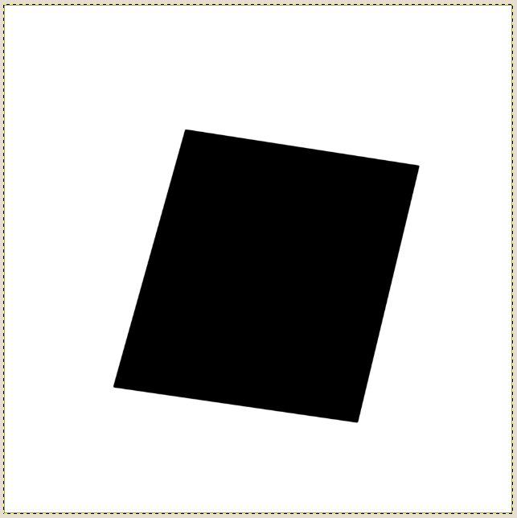
Resulting image resource built by Fusion after the custom mask is imported. Lower resolution imagery from the resource under the 15-meter imagery will be visible from the internal area masked from view:
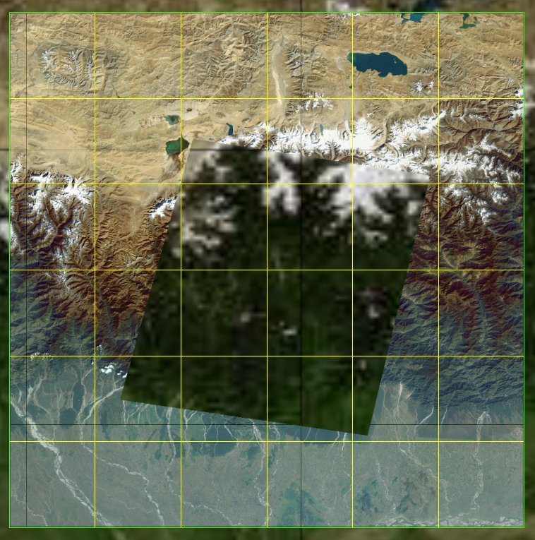
The custom mask file may now be imported into Fusion Pro with the source imagery by enabling the havemask masking mode in the Fusion Pro Resource Editor or by specifying the gemodifyimageryresource --havemask option on the command line.
Please see Appendix A for further information about enabling the havemask mask mode for an image resource.
KML file. Multiple areas may be removed from the internal portion of the image mask as separate operations. Example B: Creating an edge-matched mask with a feathered edge and masking missing internal imagery in two steps
This example will create the custom mask in two command sequences: in the first step the a feathered edge mask based on the source image (--base_image) is built; and in the second step, a KML file to mask out the area of missing imagery is applied to the mask built in the first step.
The command template to create the mask are:
- Create the edge mask (picture frame):
gepolymaskgen --feather -100 --feather_border 1 --base_image source_imagery.khvr --invert --output_mask source_imagery-basemask.tif - Mask the area of missing imagery from the mask built in the previous step:
gepolymaskgen --base_mask source_imagery-basemask.tif --feather 50 --and_neg_mask missing-imagery-area.kml --output_mask source_imagery-mask.tif
Console output for creating the mask file in one step is as follows:
- Create the edge mask (picture frame):
jcain@machine123:/gevol-local/src/gepolymaskgen-howto$ time gepolymaskgen --feather -100 --feather_border 1 --base_image glandsat_15m_bhutan_missing_imagery.khvr --invert --output_mask glandsat_15m_bhutan_missing_imagery-basemask.tifFusion Notice: Feather -100Fusion Notice: Feather border 1Fusion Notice: Base image: glandsat_15m_bhutan_missing_imagery.khvrFusion Notice: glandsat_15m_bhutan_missing_imagery.khvr width: 30720 height: 30720Fusion Notice: north: 2.882812e+01 south: 2.619141e+01 east: 9.114258e+01 west: 8.850586e+01Fusion Notice: File type: KHM/Keyhole MosaicFusion Notice: Projection : 'GEOGCS["WGS 84",DATUM["WGS_1984",SPHEROID["WGS 84",6378137,298.257223563,AUTHORITY["EPSG","7030"]],AUTHORITY["EPSG","6326"]],PRIMEM["Greenwich",0],UNIT["degree",0.0174532925199433],AUTHORITY["EPSG","4326"]]'Fusion Notice: InvertFusion Notice: Output mask: glandsat_15m_bhutan_missing_imagery-basemask.tifFusion Notice: Setting feather -100.Fusion Notice: Feather border is on.Fusion Notice: Setting base image glandsat_15m_bhutan_missing_imagery.khvr.Total tiles to process: 1Completed 100% (1/1) - tiles/sec: 0.04 - time left: 00:00:00 [CPU: 97 Mem: 1990 MB PF: 0]Processed 1 tilesTotal time to process: 00:00:23Average tiles per second: 0.04Fusion Notice: Inverting current mask.Fusion Notice: Saving mask to glandsat_15m_bhutan_missing_imagery-basemask.tif.Fusion Notice: Writing alpha file glandsat_15m_bhutan_missing_imagery-basemask.tifreal 0m36.297suser 0m32.370ssys 0m3.620sThe resulting mask will be approximately 900MB in filesize.
Edge mask created with gepolymaskgen as viewed in the GIMP photo editing tool:
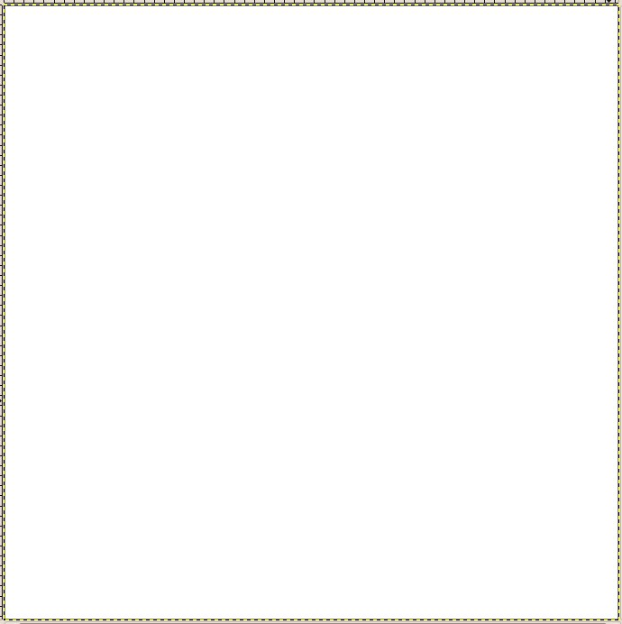
- Mask the area of missing imagery from the mask built in the previous step:
jcain@machine123:/gevol-local/src/gepolymaskgen-howto$ time gepolymaskgen --base_mask glandsat_15m_bhutan_missing_imagery-basemask.tif --feather 50 --and_neg_mask bhutan.kml --output_mask glandsat_15m_bhutan_missing_imagery-mask.tifFusion Notice: Base mask: glandsat_15m_bhutan_missing_imagery-basemask.tifFusion Notice: glandsat_15m_bhutan_missing_imagery-basemask.tif width: 30720 height: 30720Fusion Notice: north: 2.882812e+01 south: 2.619141e+01 east: 9.114258e+01 west: 8.850586e+01Fusion Notice: File type: GTiff/GeoTIFFFusion Notice: Projection : 'GEOGCS["WGS 84",DATUM["WGS_1984",SPHEROID["WGS 84",6378137,298.257223563,AUTHORITY["EPSG","7030"]],AUTHORITY["EPSG","6326"]],PRIMEM["Greenwich",0],UNIT["degree",0.0174532925199433],AUTHORITY["EPSG","4326"]]'Fusion Notice: Feather 50Fusion Notice: AND mask: bhutan.kmlFusion Notice: Output mask: glandsat_15m_bhutan_missing_imagery-mask.tifFusion Notice: Setting base mask glandsat_15m_bhutan_missing_imagery-basemask.tif.Fusion Notice: Setting feather 50.Fusion Notice: Writing alpha file glandsat_15m_bhutan_missing_imagery-mask.tifFusion Notice: Executing: ogr2ogr -t_srs 'GEOGCS["WGS 84",DATUM["WGS_1984",SPHEROID["WGS 84",6378137,298.257223563,AUTHORITY["EPSG","7030"]],AUTHORITY["EPSG","6326"]],PRIMEM["Greenwich",0],UNIT["degree",0.0174532925199433],AUTHORITY["EPSG","4326"]]' /tmp/p15693nKOdrD/tmp.shp bhutan.kmlWarning 6: Normalized/laundered field name: 'Description' to 'Descriptio'Fusion Notice: Executing: gdal_rasterize -b 1 -burn 255 -l tmp /tmp/p15693nKOdrD/tmp.shp glandsat_15m_bhutan_missing_imagery-mask.tif0...10...20...30...40...50...60...70...80...90...100 - done.Total tiles to process: 1Completed 100% (1/1) - tiles/sec: 0.04 - time left: 00:00:00 [CPU: 90 Mem: 3228 MB PF: 0]Processed 1 tilesTotal time to process: 00:00:23Average tiles per second: 0.04Fusion Notice: AND-ing mask with new mask.Fusion Notice: Saving mask to glandsat_15m_bhutan_missing_imagery-mask.tif.Fusion Notice: Writing alpha file glandsat_15m_bhutan_missing_imagery-mask.tifreal 0m56.214suser 0m44.330ssys 0m11.890sThe resulting mask file will be approximately 900MB in filesize.
Merged mask built with gepolymaskgen with feathered edge and internal image masking for area of missing imagery as viewed in the GIMP photo editing tool:
The custom mask file may now be imported into Fusion Pro with the source imagery by enabling the
havemaskmasking mode in the Fusion Pro Resource Editor or by specifying thegemodifyimageryresource --havemaskoption on the command line.Please see Appendix A for further information about enabling the
havemaskmask mode for an image resource.
Case 5: Building custom masks with both gemaskgen and gepolymaskgen
There are special cases where the capabilities of both gemaskgen and gepolymaskgen are needed to build a custom mask file for an image resource. The SFBayAreaLansat imagery from the Google Earth Enterprise Fusion Pro Tutorial is a good example (screenshot below).
Screenshot of the usgsLanSat.tif source file imported into Fusion Pro viewed with no mask. Note the areas of fill data surrounding the imagery:
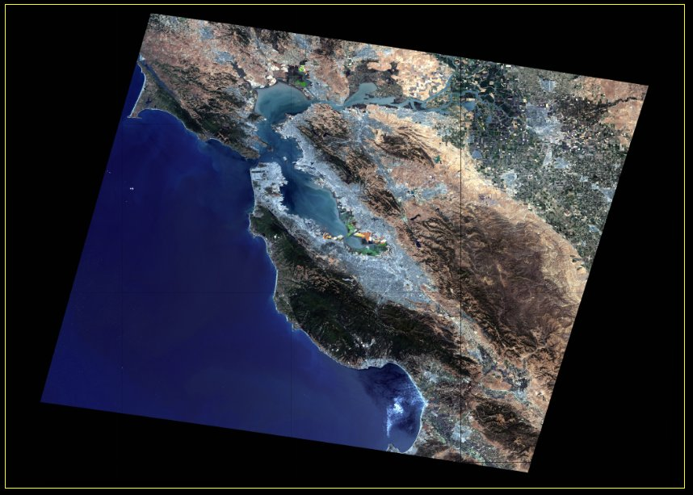
Screenshot of the usgsLanSat.tif imagery after being imported into Fusion Pro with a mask automatically computed:
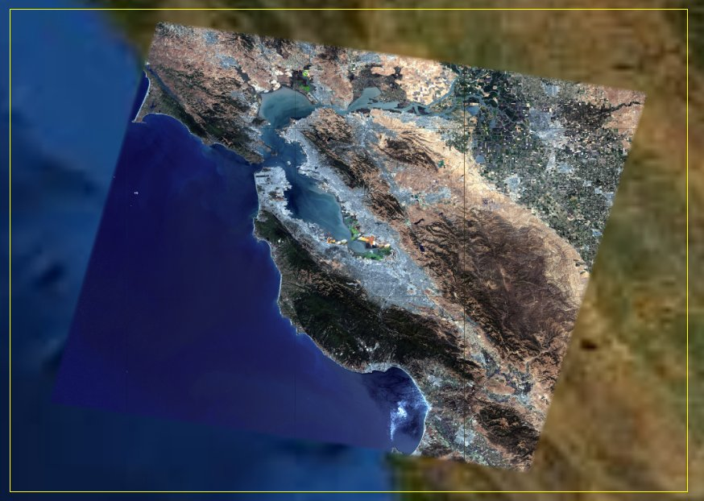
Screenshot of the imported SFBayAreaLanSat image resource in Fusion after the custom mask is created:
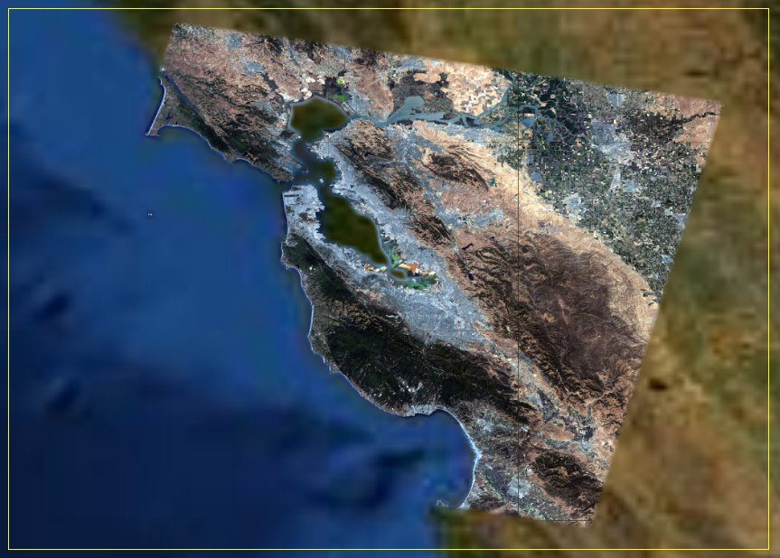
Here, the Fusion Pro automask function is needed to build a mask for the source imagery to mask all Fill Data; however, the imagery also includes imagery for the water which should be, ideally, masked to the coastline. Both gemaskgen and gepolymaskgen will be needed to accomplish this type of masking situation to build a mask hiding fill data within the image and then creating a coastline mask. This example is a special case since the source imagery must be imported into Fusion format first, then the custom mask will be generated from the output of the imagery resource build process. This example will also utilize information found in Appendixes B, C and D for locating masks built with gemaskgen.
The workflow to accomplish this custom mask will be:
- Import the source imagery as a Fusion Pro image resource
- Use the mask file built during the image resource import as the base mask for
gepolymaskgen - Mask the imagery to the coastline and write out the new mask
- Enable the
havemaskmask mode for the Image resource to import the custom mask
The command templates for building this custom mask will be:
- Locate the mask computed during the image resource build:
gequery --outfiles Resources/Imagery/YourImageResource.kiasset/maskgen.kia
/gevol/assets/Resources/Imagery/YourImageResource.kiasset/maskgen.kia/ver001/mask.tif - Create an inverted version of the mask:
/gevol/assets/Resources/Imagery/YourImageResource.kiasset/maskgen.kia/ver001/mask.tif --invert --output_mask /gevol/src/path/to/source/imagery-basemaskinverted.tif - Create a coastline mask using the mask as a base image:
gepolymaskgen --base_image/gevol/src/path/to/source/imagery-basemaskinverted.tif --invert --feather 100 --and_neg_mask /gevol/src/coastlines.shp --output_mask /gevol/src/path/to/source/imagery-coastlinesinverted.tif - Merge the two mask files to the final custom mask:
gepolymaskgen --base_mask /gevol/src/path/to/source/imagery-basemaskinverted.tif --invert --and_neg_mask /gevol/src/path/to/source/imagery-coastlinesinverted.tif --output_mask /gevol/src/path/to/source/imagery-mask.tifThe resulting
imagery-mask.tifcustom mask may then be imported with the source imagery and applied to the image resource in Google Earth Enterprise Fusion Pro.
An example workflow is included below which constructs a custom mask - masking both fill data automatically with gemaskgen and the coastlines with gepolymaskgen - for the SFBayAreaLanSat imagery resource built during the Google Earth Enterprise Fusion Tutorial.
- Locate the computed mask file built when SFBayAreaLanSat built by gemaskgen
jcain@machine123:/gevol-local/gepolymaskgen$ gequery --infiles Resources/Imagery/SFBayAreaLanSat.kiasset/maskproduct.kia/gevol-local/gepolymaskgen/Resources/Imagery/SFBayAreaLanSat.kiasset/product.kia/ver001/raster.kip/gevol-local/gepolymaskgen/Resources/Imagery/SFBayAreaLanSat.kiasset/maskgen.kia/ver002/mask.tif
a. Invert the mask file built during the Fusion Pro import:
jcain@machine123:/gevol-local/gepolymaskgen$ sudo /opt/google/bin/gepolymaskgen --base_mask /gevol-local/gepolymaskgen/Resources/Imagery/SFBayAreaLanSat.kiasset/maskgen.kia/ver002/mask.tif --invert --output_mask /opt/google/share/tutorials/fusion/Imagery/usgsLanSat-invertbasemask.tif
Fusion Notice: Base mask: /gevol-local/gepolymaskgen/Resources/Imagery/SFBayAreaLanSat.kiasset/maskgen.kia/ver002/mask.tif
Fusion Notice: /gevol-local/gepolymaskgen/Resources/Imagery/SFBayAreaLanSat.kiasset/maskgen.kia/ver002/mask.tif width: 8206 height: 5856
Fusion Notice: north: 3.846468e+01 south: 3.645418e+01 east: -1.207133e+02 west: -1.235306e+02
Fusion Notice: File type: GTiff/GeoTIFF
Fusion Notice: Projection : 'GEOGCS["WGS 84",DATUM["WGS_1984",SPHEROID["WGS 84",6378137,298.257223563,AUTHORITY["EPSG","7030"]],AUTHORITY["EPSG","6326"]],PRIMEM["Greenwich",0],UNIT["degree",0.0174532925199433],AUTHORITY["EPSG","4326"]]'
Fusion Notice: Invert
Fusion Notice: Output mask: /opt/google/share/tutorials/fusion/Imagery/usgsLanSat-invertbasemask.tif
Fusion Notice: Setting base mask /gevol-local/gepolymaskgen/Resources/Imagery/SFBayAreaLanSat.kiasset/maskgen.kia/ver002/mask.tif.
Fusion Notice: Inverting current mask.
Fusion Notice: Saving mask to /opt/google/share/tutorials/fusion/Imagery/usgsLanSat-invertbasemask.tif.
Fusion Notice: Writing alpha file /opt/google/share/tutorials/fusion/Imagery/usgsLanSat-invertbasemask.tif
b. Create a second mask file with the coastlines, inverted:
jcain@machine123:/gevol-local/gepolymaskgen$ sudo /opt/google/bin/gepolymaskgen --base_image /gevol-local/gepolymaskgen/Resources/Imagery/SFBayAreaLanSat.kiasset/maskgen.kia/ver002/mask.tif --invert --feather 50 --and_neg_mask /gevol-local/src/gepolymaskgen-howto/world_coastlines_4326.shp --output_mask /opt/google/share/tutorials/fusion/Imagery/usgsLanSat-invertcoastmask.tif
Fusion Notice: Base image: /gevol-local/gepolymaskgen/Resources/Imagery/SFBayAreaLanSat.kiasset/maskgen.kia/ver002/mask.tif
Fusion Notice: /gevol-local/gepolymaskgen/Resources/Imagery/SFBayAreaLanSat.kiasset/maskgen.kia/ver002/mask.tif width: 8206 height: 5856
Fusion Notice: north: 3.846468e+01 south: 3.645418e+01 east: -1.207133e+02 west: -1.235306e+02
Fusion Notice: File type: GTiff/GeoTIFF
Fusion Notice: Projection : 'GEOGCS["WGS 84",DATUM["WGS_1984",SPHEROID["WGS 84",6378137,298.257223563,AUTHORITY["EPSG","7030"]],AUTHORITY["EPSG","6326"]],PRIMEM["Greenwich",0],UNIT["degree",0.0174532925199433],AUTHORITY["EPSG","4326"]]'
Fusion Notice: Invert
Fusion Notice: Feather -50
Fusion Notice: AND mask: /gevol-local/src/gepolymaskgen-howto/world_coastlines_4326.shp
Fusion Notice: Output mask: /opt/google/share/tutorials/fusion/Imagery/usgsLanSat-invertcoastmask.tif
Fusion Notice: Setting base image /gevol-local/gepolymaskgen/Resources/Imagery/SFBayAreaLanSat.kiasset/maskgen.kia/ver002/mask.tif.
Fusion Notice: Inverting current mask.
Fusion Notice: Setting feather -50.
Fusion Notice: Writing alpha file /opt/google/share/tutorials/fusion/Imagery/usgsLanSat-invertcoastmask.tif
Fusion Notice: Executing: gdal_rasterize -b 1 -burn 255 -l world_coastlines_4326 /gevol-local/src/gepolymaskgen-howto/world_coastlines_4326.shp /opt/google/share/tutorials/fusion/Imagery/usgsLanSat-invertcoastmask.tif
0...10...20...30...40...50...60...70...80...90...100 - done.
Total tiles to process: 1
Completed 100% (1/1) - tiles/sec: 0.83 - time left: 00:00:00 [CPU: 7 Mem: 292 MB PF: 0]
Processed 1 tiles
Total time to process: 00:00:01
Average tiles per second: 0.83
Fusion Notice: AND-ing mask with new mask.
Fusion Notice: Saving mask to /opt/google/share/tutorials/fusion/Imagery/usgsLanSat-invertcoastmask.tif.
Fusion Notice: Writing alpha file /opt/google/share/tutorials/fusion/Imagery/usgsLanSat-invertcoastmask.tif
c. Construct the final mask by merging the two mask files:
jcain@machine123:/gevol-local/gepolymaskgen$ sudo /opt/google/bin/gepolymaskgen --base_mask /opt/google/share/tutorials/fusion/Imagery/usgsLanSat-invertbasemask.tif --invert --and_neg_mask /opt/google/share/tutorials/fusion/Imagery/usgsLanSat-invertcoastmask.tif --output_mask /opt/google/share/tutorials/fusion/Imagery/usgsLanSat-mask.tif
Fusion Notice: Base mask: /opt/google/share/tutorials/fusion/Imagery/usgsLanSat-invertbasemask.tif
Fusion Notice: /opt/google/share/tutorials/fusion/Imagery/usgsLanSat-invertbasemask.tif width: 8206 height: 5856
Fusion Notice: north: 3.846468e+01 south: 3.645418e+01 east: -1.207133e+02 west: -1.235306e+02
Fusion Notice: File type: GTiff/GeoTIFF
Fusion Notice: Projection : 'GEOGCS["WGS 84",DATUM["WGS_1984",SPHEROID["WGS 84",6378137,298.257223563,AUTHORITY["EPSG","7030"]],AUTHORITY["EPSG","6326"]],PRIMEM["Greenwich",0],UNIT["degree",0.0174532925199433],AUTHORITY["EPSG","4326"]]'
Fusion Notice: Invert
Fusion Notice: AND mask: /opt/google/share/tutorials/fusion/Imagery/usgsLanSat-invertcoastmask.tif
Fusion Notice: Output mask: /opt/google/share/tutorials/fusion/Imagery/usgsLanSat-mask.tif
Fusion Notice: Setting base mask /opt/google/share/tutorials/fusion/Imagery/usgsLanSat-invertbasemask.tif.
Fusion Notice: Inverting current mask.
Fusion Notice: Writing alpha file /opt/google/share/tutorials/fusion/Imagery/usgsLanSat-mask.tif
Fusion Notice: AND-ing mask with new mask.
Fusion Notice: Saving mask to /opt/google/share/tutorials/fusion/Imagery/usgsLanSat-mask.tif.
Fusion Notice: Writing alpha file /opt/google/share/tutorials/fusion/Imagery/usgsLanSat-mask.tif
Screenshots of the mask files during the build process are included below for reference. Each mask file is approximately 50MB in file size.
Mask computed by gemaskgen during SFBayAreaLanSat image resource import:
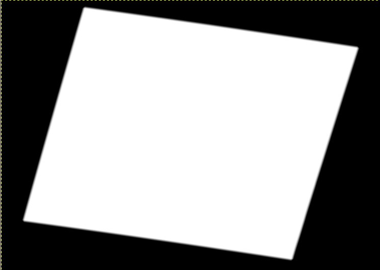
Step A: Inverted base mask:
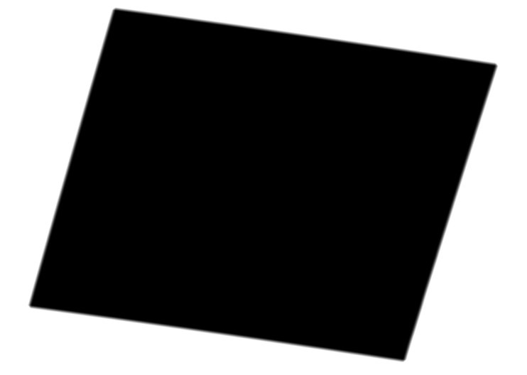
Step B: Inverted coastlines mask:
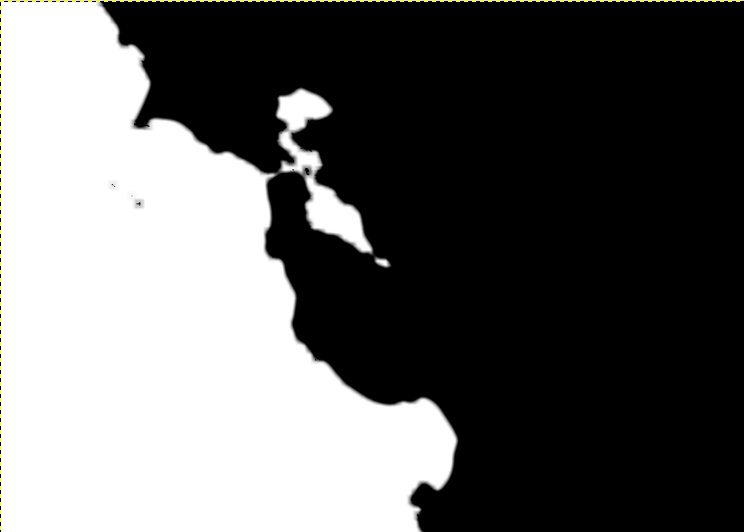
Step C: Merged, finished custom mask:
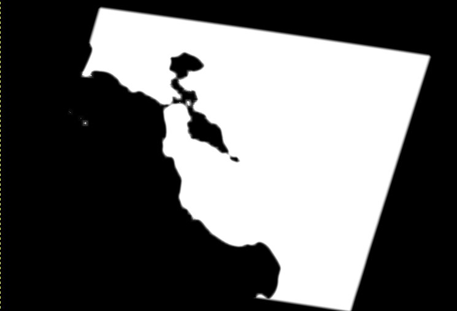
The custom mask may now be imported into Google Earth Enterprise Fusion Pro with the image resource by enabling the havemask mask mode.
Please see Appendix A for further details about importing the new custom mask with an image resource.
A screenshot of the SFBayAreaLanSat image resource with the custom mask is viewable below:
This example workflow utilized the mask file automatically computed by Fusion Pro during the image resource import. By default, the mask files created by gemaskgen will typically be low resolution with a maximum of 16,000 pixels on any one side. It is possible to create a higher resolution mask file by manually operating the gemaskgen command on the command line.
Please see Appendix D for further details.
Appendix A: Importing custom masks with imagery and terrain resources in Google Earth Enterprise Fusion Pro
Custom imagery mask files built by either gemaskgen, gepolymaskgen, or another third-party application will only be imported automatically if the havemask mask option is selected for an image or terrain resource. Custom masks may be created before an image is imported into Fusion Pro or built after the image has already been imported as a resource. For either case, the havemask masking mode may be enabled by either from the Fusion GUI Resource Editor or from the command line with the --havemask option.
Example procedures for enabling the havemask option by command line and the Fusion GUI are available below as reference. Further details about the Fusion GUI Resource Editor and the command line tools genewimageryresource and gemodifyimageryresource may be found in the "Google Earth Enterprise Fusion Reference Guide" Defining Resources section and the Command Line Reference section.
Four examples cases are included below as a reference - two for enabling havemask mode within the Fusion GUI for new or existing image resources, and two for enabling havemask mode on the command line.
Example 1: Enable havemask mode in the Fusion GUI for a new image resource
- Move the custom mask file to the same folder as the source file for the image.
- Rename the custom mask file to be the same filename as the source image file with a
-mask.tifextension.
For example: If the
/gevol/src/imagery/example.tifis the source file, then the custom mask must be/gevol/src/imagery/example-mask.tif - Load the Fusion GUI Asset Manager:
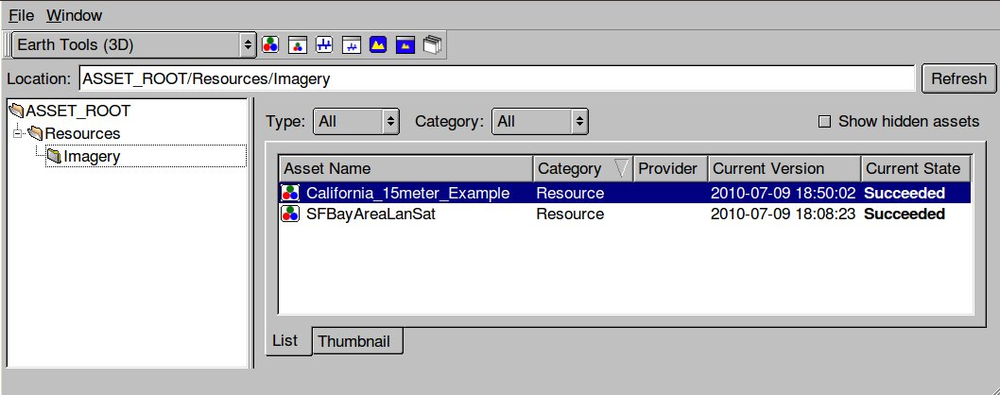
- Start a new image resource and specify the source file, provider, acquisition date
- Set the Mask Type to Have Mask from the Mask Options drop-down menu
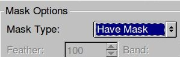
- Save the image resource, specifying the location and name for the new image resource.
- Build the image resource.
- Once complete, load the newly built Fusion image resource into the Preview window to view the results. Proceed building the image resource into an imagery project if the custom mask is satisfactory, or continue working on the custom mask and repeat the import process until satisfied with the custom mask.
Example 2: Enable havemask mode by command line for a new image resource
- Move the custom mask file to the same folder as the source file for the image.
- Rename the custom mask file to be the same filename as the source image file with a
-mask.tifextension.For example if the:
/gevol/src/imagery/example.tifis the source file, then the custom mask must be:/gevol/src/imagery/example-mask.tif - On the command line, enter:
genewimageryresource --havemask --sourcedate '0000-00-00' --provider 'USGS' -o Resources/Imagery/Example-Imagery /gevol/src/imagery/example.tifreplacing the provider, sourcedate and resource name to suit the imagery being imported.
- Build the image resource by entering:
gebuild Resources/Imagery/Example-Imageryon the command line - Once the image resource build is complete, load the newly built Fusion image resource into the Preview window to view the results. Proceed building the image resource into an imagery project if the custom mask is satisfactory, or continue working on the custom mask and repeat the import process until satisfied with the custom mask.
Example 3: Enable havemask mode in the Fusion GUI for an existing image resource
- Move the custom mask file to the same folder as the source file for the image.
- Rename the custom mask file to be the same filename as the source image file with a
-mask.tifextension.For example if the:
/gevol/src/imagery/example.tifis the source file, then the custom mask must be:/gevol/src/imagery/example-mask.tif - Load the Fusion GUI Asset Manager:
- Double-click on the name of the image resource for which the custom mask will be applied, or right-click on the image resource and select Modify
- When the Resource Editor loads, change the Mask Type to Have Mask from the Mask Options drop-down menu
- Save the image resource.
- Build the image resource.
- Once the image resource build is complete, load the newly built Fusion image resource into the Preview window to view the results. Proceed building the image resource into an imagery project if the custom mask is satisfactory, or continue working on the custom mask and repeat the import process until satisfied with the custom mask.
Example 4: Enable havemask mode by command line for an existing image resource
- Move the custom mask file to the same folder as the source file for the image.
- Rename the custom mask file to be the same filename as the source image file with a
-mask.tifextension.For example if the:
/gevol/src/imagery/example.tifis the source file, then the custom mask must be:/gevol/src/imagery/example-mask.tif - On the command line, enter:
gemodifyimageryresource --havemask --sourcedate '0000-00-00' --provider 'USGS' -o Resources/Imagery/Example-Imagery /gevol/src/imagery/example.tifreplacing the provider, sourcedate and resource name to suit the imagery being imported.
- Build the image resource by entering
gebuild Resources/Imagery/Example-Imageryon the command line - Once the image resource build is complete, load the newly built Fusion image resource into the Preview window to view the results. Proceed building the image resource into an imagery project if the custom mask is satisfactory, or continue working on the custom mask and repeat the import process until satisfied with the custom mask.
Appendix B: Locating mask files and Fusion format data in an Asset Root
Several files are created by GEE Fusion Pro when building an imagery or terrain resource, including the Fusion-format version of the imagery (.kip extension) or terrain (.ktp extension), a computed mask file built by gemaskgen, and the Fusion-format version of the computed mask (.kmp extension). These files and folders may be located within the Asset Root with the help of the gequery command and the --outfiles and --infiles options.
These files may be desired for custom masking operations such as computing a new, higher resolution mask with gemaskgen - which is computed from a .kip or .ktp folder - or locating the mask automatically built with gemaskgen to add coastlines, such as described in the Case 5 Example section. This section of the How-To guide will provide command templates for locating the Fusion format versions of imagery and terrain within the GEE Fusion Asset Root, and locating a mask file built by gemaskgen during resource import.
Example 1: Locate the Fusion format imagery (.kip) and mask (.kmp) files of an image resource
The gequery --outfiles command can be used to locate the Fusion-format versions of imported imagery or terrain data, and the Fusion-format version of the mask file as these are the output of the Fusion resource. Here is an example command to find the Fusion format imagery (.kip) and mask (.kmp) files from the SFBayAreaLanSat image resource built during the Fusion Pro Tutorial:
jcain@machine123:/gevol-local/gepolymaskgen$ gequery --outfiles Resources/Imagery/SFBayAreaLanSat.kiasset
/gevol-local/gepolymaskgen/Resources/Imagery/SFBayAreaLanSat.kiasset/product.kia/ver001/raster.kip
/gevol-local/gepolymaskgen/Resources/Imagery/SFBayAreaLanSat.kiasset/maskproduct.kia/ver002/mask.kmp
The response from gequery --outfiles provides the full folder path where the .kip and .kmp folders are located that comprise the SFBayAreaLanSat image resource imagery and mask in Fusion format. The location of the .kip folder will be vital information to regenerate a mask with gemaskgen as noted in Appendix C, or if working with an imagery dataset that is larger than 65,000 pixels on a side as noted in Appendix D. The version of the imagery .kip folder and mask .kmp folders will change over time as newer source imagery are imported for the image resource or changes are made to the automask. The gequery --outfiles command will report the full paths that relate to the most current version of the image resource. Further information about the gequery command may be found in the gequery --help menu.
Example 2: Locate a mask.tif file automatically built by the automask feature of a Fusion resource build
Finding the mask file automatically computed by gemaskgen during a resource import is slightly different since it is the output of a different phase of the image resource build, but is needed to build the .kmp folder. The gequery --outfiles options can help locate the mask file built by the Fusion automask tool gemaskgen. Here is an example command to locate the full path of the mask file computed by Fusion for the SFBayAreaLanSat image resource built during the Fusion Pro Tutorial:
jcain@machine123:/gevol-local/gepolymaskgen$ gequery --outfiles Resources/Imagery/SFBayAreaLanSat.kiasset/maskgen.kia
/gevol-local/gepolymaskgen/Resources/Imagery/SFBayAreaLanSat.kiasset/maskgen.kia/ver002/mask.tif
The response from gequery --outfiles provides the full path location to the mask file built by the gemaskgen tool when the automask masking mode is selected for a resource. This computed mask file is used to build the Fusion-format mask (.kmp) for a resource. It is possible to build complex mask files for image resources by combining output from the gemaskgen automask tool and the gepolymaskgen tool, as described in the Case 5 Example where the automatic fill data detection of gemaskgen can be combined with coastline masking capabilities of gepolymaskgen.
Please see the Case 5 Example for further details.
Example 3: Locate the mask.tif file and Fusion format .kip file utilized for building the Fusion format .kmp (mask product)
Two inputs are required by Fusion to convert a mask file from GeoTIFF format into Fusion format for use with an image or terrain resource: the location of the mask.tif file and the location of the correct .kip folder. Examples 1 and 2 demonstrated how gequery --outfiles may be utilzed to determine the folder paths of the Fusion-format .kip and .kmp data and the location of the mask file computed by gemaskgen during the resource build.
The locations of the .kipand mask.tif files read in by Fusion for generating the Fusion-format .kmp mask may be found with the gequery --infiles option. This is useful in situations where a higher fidelity base mask file is needed for building a custom mask file, as described in the Case 5 Example. Here is the command to locate the full paths to the computed mask file (gemaskgen) and Fusion-format .kip folder for the SFBayAreaLanSat image resource built during the Fusion Pro Tutorial:
jcain@machine123:/gevol-local/gepolymaskgen$ gequery --infiles Resources/Imagery/SFBayAreaLanSat.kiasset/maskproduct.kia
/gevol-local/gepolymaskgen/Resources/Imagery/SFBayAreaLanSat.kiasset/product.kia/ver001/raster.kip
/opt/google/share/tutorials/fusion/Imagery/usgsLanSat-mask.tif
A new base mask file may be built with the gemaskgen command which permits a larger number of pixels to be used for developing the mask file - as described in Appendix D - which could then be used in conjunction with Case 5 Example, or as a base mask for very large image resources as described in Appendix F.
Appendix C: Determining source file raster size with geinfo
Google Earth Enterprise Fusion Pro includes a tool called geinfo capable of reporting metadata about source imagery and terrain files, including:
- Overall raster dimensions,
- Pixel resolution,
- Geographic location of the data
- Native projection or geographic coordinate system
- Number of bands in the file
- Band format (ex: 8bit, 16bit)
geinfo is able to read the same raster source formats that can be imported as Fusion image resources, including khvr (virtual raster) files for the raster dimensions of a mosaic.
Mask files computed with the gepolymaskgen tool will be written out in GeoTIFF format and must be less than 2GB in total file size. The geinfo tool can be used to determine the overall raster size of the input source file by entering geinfo source_imagery.tif onto the command line, where GEE Fusion Pro is installed, and then mulitplying the source file raster width (pixels) and height (pixels) values. The product may be used to estimate the file size that would be created by gepolymaskgen, if the source file was specified as the gepolymaskgen --base_image. Example output from geinfo is included below for the California 15-meter Landsat imagery that was used with the Case 3 Example. The raster dimensions for the mosaic are highlighted for quick reference.
jcain@machine123:/gevol-local/src/gepolymaskgen-howto$ geinfo glandsat_15m_california_bay_area.khvr
File Type: KHM/Keyhole Mosaic
Raster Size: 35840,30720
Extents: (ns) 38.496093750000,35.859375000000
(ew) -121.113281250000,-124.189453125000
Pixel Size: (xy) 0.000085830688,-0.000085830688
Keyhole Normalized {
Raster Size: 35840,30720
Extents: (ns) 38.496093750000,35.859375000000
(ew) -121.113281250000,-124.189453125000
Pixel Size: (xy) 0.000085830688,-0.000085830688
Top level: 22
}
Spatial Reference System:
GEOGCS["WGS 84",
DATUM["WGS_1984",
SPHEROID["WGS 84",6378137,298.257223563,
AUTHORITY["EPSG","7030"]],
AUTHORITY["EPSG","6326"]],
PRIMEM["Greenwich",0],
UNIT["degree",0.0174532925199433],
AUTHORITY["EPSG","4326"]]
Corner Coordinates:
Upper Left (-124.1894531, 38.4960938) (124d11'22.03"W, 38d29'45.94"N)
Lower Left (-124.1894531, 35.8593750) (124d11'22.03"W, 35d51'33.75"N)
Upper Right (-121.1132812, 38.4960938) (121d 6'47.81"W, 38d29'45.94"N)
Lower Right (-121.1132812, 35.8593750) (121d 6'47.81"W, 35d51'33.75"N)
Center (-122.6513672, 37.1777344) (122d39'4.92"W, 37d10'39.84"N)
Band 1 Block=2048x200 Type=Byte, ColorInterp=Red
NoData Value=0
Band 2 Block=2048x200 Type=Byte, ColorInterp=Green
NoData Value=0
Band 3 Block=2048x200 Type=Byte, ColorInterp=Blue
NoData Value=0
Band 4 Block=2048x200 Type=Byte, ColorInterp=Alpha
Multiplying the raster dimensions together (35840 x 30720) results 1,101,004,800 which means a 1GB (approximate) mask file would be created if the khvr was specified as a gepolymaskgen --base_image.
Maximum suggested raster dimensions for source files used as gepolymaskgen --base_image files
Some suggested maximum raster dimensions are included as a rough guideline to help size and scope source files when creating custom masks. The source file should not be used as a base image for gepolymaskgen if the total raster size is larger than 2,000,000,000 pixels. For this case, a lower resolution image should be created as described in Appendix D.
Square-shaped rasters
Perfectly square source raster files should be less than 44,000 pixels by 44,000 pixels for use as a base image, or base mask, with gepolymaskgen. A substitute base image or mask file should be created for square-shaped source images that are larger than 44,000 pixels on both sides, as described in Appendix D.
Rectangular-shaped rasters
The maximum suggested raster dimensions for rectangular images varies by the amount of the longest side. Some suggested dimensions are included below for reference.
- 55,000 x 30,000
- 60,000 x 35,000
- 65,000 x 30,000
- 70,000 x 27,000
A substitute base image or mask file should be created if the source imagery is larger than these recommended dimensions, or if the product of the raster width and height is more than 2,000,000,000 pixels. Instructions for creating a substitute base image, with gemaskgen, may be found in Appendix D.
Appendix D: Building high resolution mask files with gemaskgen
The gemaskgen automask utility has several options to automatically compute a mask file from an imported Fusion imagery resource (.kip); however, by default gemaskgen limits the computed mask to only be a maximum of 16,000 pixels on any one side which can result in low-resolution masks for high-resolution image resources. Higher resolution masks may be created by manually invoking the gemaskgen tool specifying a higher pixel value for the --maxsize option.
gemaskgen requires access to the Fusion format version of the imagery resource to compute the mask file, which may be located either in the Fusion Asset Root or in a separate folder, depending if the imagery was processed by another system and copied to the Fusion system for use, or if a KRP.taskrule taskrule file redirects output from Fusion resource imports to another volume. The location of both the .kip folder Fusion-format imagery and mask.tif file may be found with the gequery --infiles command as described in Appendix B, Example 3.
The exact settings used by gemaskgen when building a mask file for an image resource may be found from the gemaskgen log file, available in the Google Earth Enterprise Fusion Pro Asset Manager. To access the log file, load the Asset Manager and right-click on the desired image resource. Select the Current Version Properties entry then expand the CHILD.KRMP item until the Maskgen.kia& entry is visible.
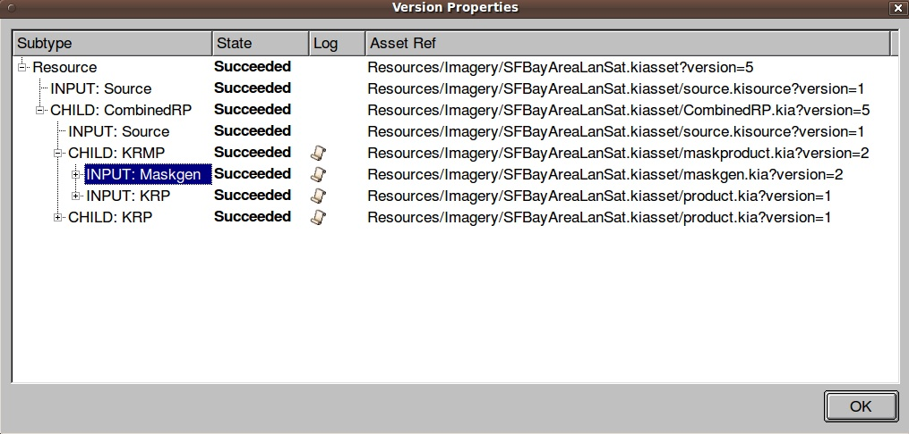
Left-click once on the logfile icon to the right of the Maskgen.kia entry to open the Logfile.
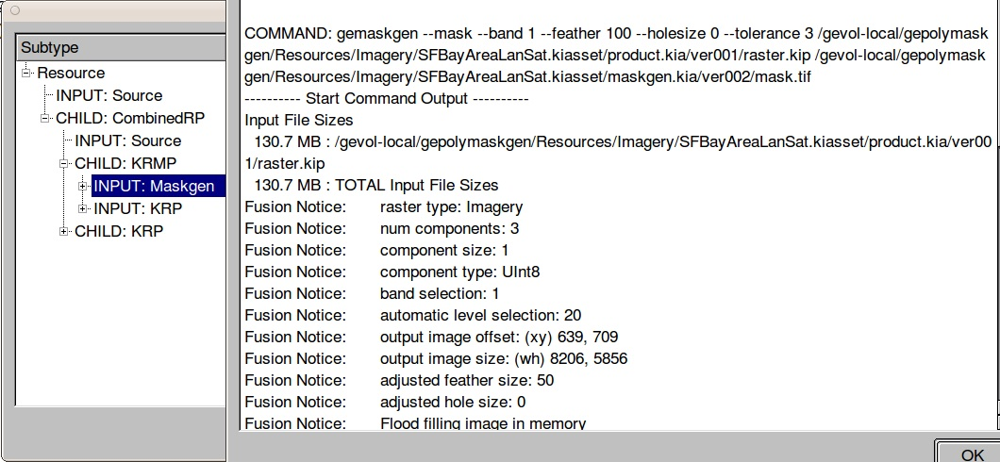
The gemaskgen command executed by Fusion Pro during the image resource build is visible at the top of the log file on the line starting with COMMAND. This command may be utilized as a template for building a higher resolution mask by also including the --maxsize option.
An example gemaskgen use will be included below that will build a mask for the example-imagery.kip image resource with a maximum size of 55,000 pixels, feathered 100 pixels into the imagery, with fill data set to pixel value 0:
jcain@machine123:/gevol-local/src/gepolymaskgen-howto$ time gemaskgen --mask --maxsize 55000 --feather 100 /path/to/example-imagery.kip /path/to/example-imagery-mask.tif
gemaskgen will read the example-imagery.kip folder and compute a mask file that masks Fill Data pixels and builds a feathered edge of 100 pixels into the usable imagery. The actual output dimensions of the computed mask varies from case to case; however, gemaskgen will restrict the maximum length of either the height or width to 55,000 pixels. Additional information about recommended mask dimensions may be found in Appendix C. Once complete, the mask file computed by gemaskgen may be used as a base image for building a custom mask with gepolymaskgen and then imported with the image resource as described in Appendix A.
Further information about available gemaskgen options may be from the gemaskgen --help menu.
Appendix E: Using a Photo Editing application to augment a custom mask
This is a special section for manually modifying a custom mask for an imagery resource. Both the gepolymaskgen and gemaskgen tools are able to build high quality masks to accompany image resources; however, there are cases where neither tool may be able to provide the correct solution for a set of imagery. Consider the mask and imagery resource from the Case 5 Example based on the SFBayAreaLanSat image resource for California (below) where gemaskgen successfully masked Fill Data from view and gepolymaskgen successfully masked ocean imagery to the specified coastline. The resulting mask masks out the San Francisco Bay which makes the low-resolution BlueMarble imagery visible (green).
SFBayAreaLanSat image resource as completed in Example Case 5:
SFBayAreaLanSat image resource with automasking only:
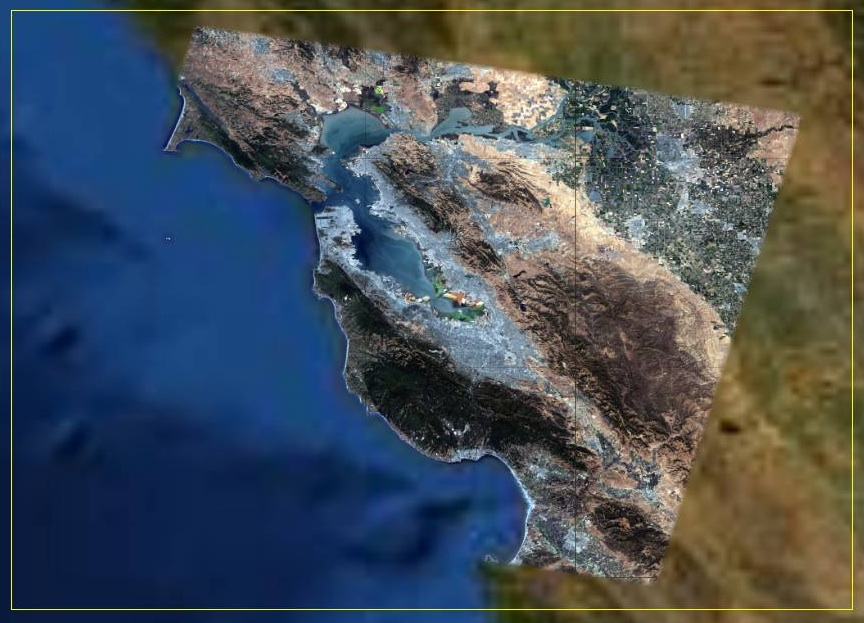
One solution for this case is to manually modify the finished custom mask with a photo editing tool such as GIMP or Adobe Photoshop to alter the mask to show more imagery, or less imagery based on the circumstance. In this example, the usgsLanSat-mask.tif custom mask will modified such that imagery for the San Francisco Bay will be visible in the final image resource while still masking imagery to the California Coastline. Here is the workflow for manually modifying the mask file for the SFBayAreaLanSat image resource:
- Load the usgsLanSat-mask.tif mask file created from the Case 5 Example into the photo editing application
- Select the paintbrush tool and set to paint with white fill(255). The pixel width, opacity, and feather value of the brush needed will vary for each mask.
- Brush out the entire San Francisco Bay to remove the bay coastline mask
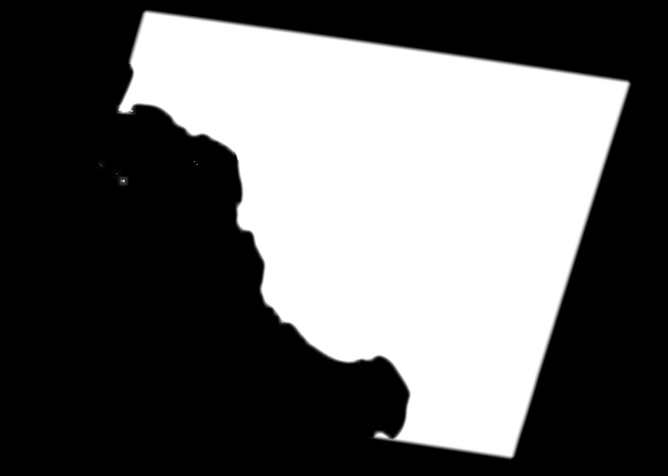
- Save the updated mask file to the same folder location as the
usgsLanSat.tifsource image file for the SFBayAreaLanSat image resource- /opt/google/share/tutorials/fusion/Imagery - Modify the SFBayAreaLanSat image resource to enable the
HaveMaskmask mode.Please see Appendix A, Examples 3 and 4 for further details.
- Build the image resource to import the updated mask file.
- Load the SFBayAreaLanSat image resource into the Fusion Pro Preview
usgsLanSat mask after mask updates to show the imagery for the San Francisco Bay:
usgsLanSat mask before mask edits:
Appendix F: Building custom masks for large source imagery
This is a special section intended for use when working with source imagery datasets - such as an image resource of 0.5-meter per pixel resolution 3-band, color imagery for an entire state - where a high-fidelity mask is desired could easily create a mask file larger than 2GB in filesize. The same tools described in this document and appendices can be used to construct a custom mask that provides high fidelity masking for the image resource while being less than 2GB in file size. The key difference in the workflow for building custom mask for large imagery resources - where the image resource will have more than 65,000 pixels on one side - is the source imagery are imported first, then gemaskgen is called manually to create a stand-in base mask file for use with gepolymaskgen. This workflow is similar to the Case 5 Example where the image resource was imported first into Fusion Pro and then a custom mask was generated and added after import.
The general workflow for this use case will be:
Assuming the source imagery is detected to be larger than 65,000 pixels on one side (or more than 2,000,000,000 total pixels) with geinfo (See Appendix C);
- Import the image resource with Fusion Pro;
- View the finished image resource in the Fusion Pro window to determine what type of masking may be needed so an appropriate example Case may be referenced;
- Find the full paths to the imported, Fusion-format
kipfolder for the imagery with thegequery --outfiles command(See Appendix B, Example 1) - Generated a 'stand-in' base mask file with
gemaskgenthat will construct an image less than 2,000,000,000 total pixels (See Appendix D for Creating the mask and Appendix C for Recommended mask sizes) - Construct a custom mask with
gepolymaskgenreferencing the stand-in image from Case 5 Example as the--base_image. Reference one of the five example cases for additional steps in constructing the custom mask. - Update the image resource configuration to enable
havemaskmode so the custom mask will be imported and applied to the image resource (See Appendix A, Examples 3 and 4) - Build the image resource to commit the change and import the new custom mask, then view the image resource in the Fusion Preview window.
Appendix G: gepolymaskgen help menu
A full copy of the help contents for gepolymaskgen is available in this appendix for reference:
usage: gepolymaskgen --help | -?
gepolymaskgen [--feather <int_feather>] --base_mask <geotiff_mask_file> [options] --output_mask <geotiff_mask_file>
gepolymaskgen [--feather <int_feather>] --base_image <geotiff_image_file> [options] --output_mask <geotiff_mask_file>
Options are applied in order given.
Valid options:
--feather <int_feather>: Feather to apply to all
subsequent masks until a
different feather is given.
Feather can be 0, positive,
or negative. Default is 0.
--feather_border <int_flag>: If flag is non-zero, border
is feathered. Otherwise,
border is left in tact.
Flag remains in effect
until it is modified.
Default is border is
feathered.
--and_neg_mask <mask_file>: Bitwise AND of negative image
of polygon or raster mask
with the current mask.
Polygons can be given in
.kml or .shp files and are
assumed to be filled with
0x00. Raster masks should be
.tif files with the same pixel
dimensions as the base mask.
Care should be taken not to
overlap feathered regions.
--or_mask <mask_file>: Bitwise OR polygon or raster
mask to the current mask.
Polygons can be given in
.kml or .shp files and are
assumed to be filled with
0xff. Raster masks should be
.tif files with the same pixel
dimensions as the base mask.
Care should be taken not to
overlap feathered regions.
--threshold <thresh_byte>: All pixels at or below the
threshold byte are set to
0x00; all other pixels are set
to 0xff.
Please note that ordering of arguments is important; they are applied in the order that they are given. The feather argument implies that you are setting the feather to be used for any subsequent masks. E.g. to feather the base mask, you must set the feather before the base mask is given. Positive feathers erode the mask (white area retracts); negative feathers expand the mask (white area grows).
Examples:
-- simple polygon mask with no feathering
gepolymaskgen --base_image /path/input_image.tif \
--or_mask /path/polygon.kml \
--output_mask /path/result_mask.tif
-- negative polygon mask with some feathering
gepolymaskgen --base_image /path/input_image.tif \
--feather 30 \
--feather_border 0 \
--and_neg_mask /path/polygon.kml \
--invert \
--output_mask /path/result_mask.tif
-- OR and AND polygon and tiff masks with different feathers \
gepolymaskgen --feather 30 \
--base_mask /path/base_mask.tif \
--feather 20 \
--feather_border 0 \
--or_mask /path/SF.kml \
--or_mask /path/daly_city.kml \
--feather 15 \
--feather_border 1 \
--or_mask /path/circle_mask.tif \
--feather 5 \
--and_neg_mask /path/gg_park.kml \
--and_neg_mask /path/northbeach.kml \
--feather 40 \
--and_neg_mask /path/circle_mask2.tif \
--output_mask /path/mask.tif